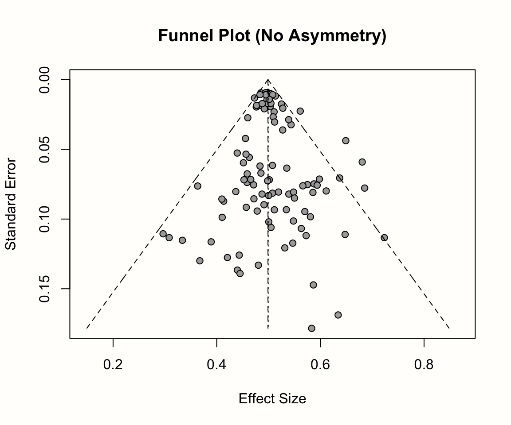
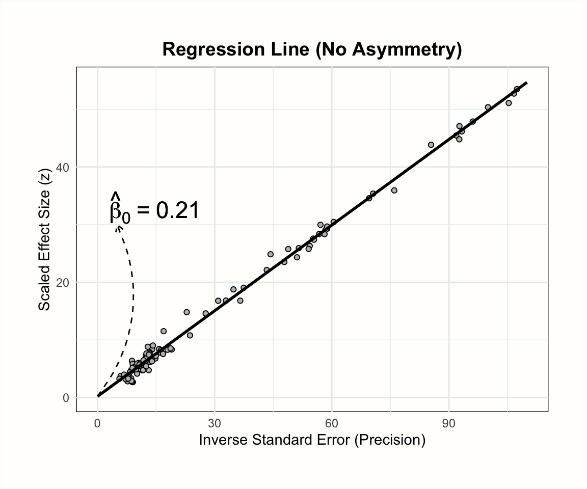
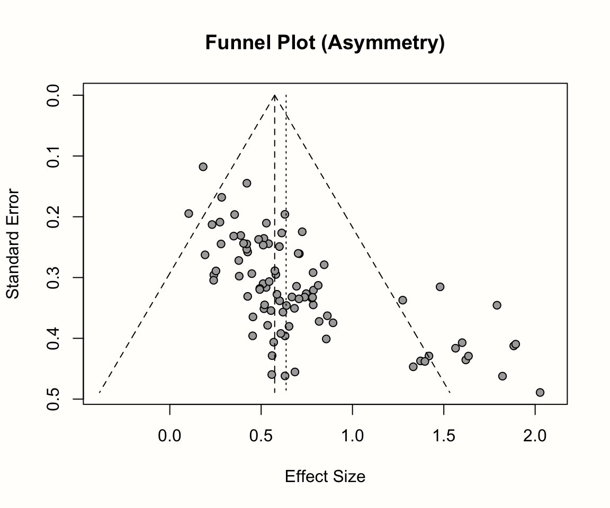
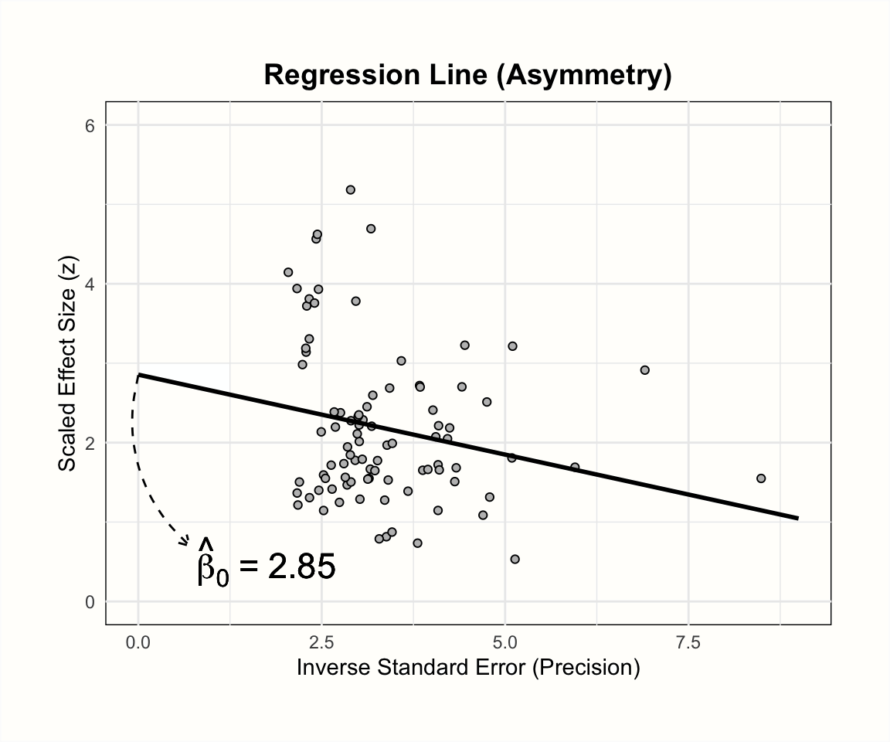

9 出版バイアス
前 章を振り返ってみると、すでにメタ分析の幅広い技術をカバーしていることがわかる。効果量をプールする方法を学んだだけでなく、発見の頑健性を評価する方法、異質性のパターンを検査する方法、効果に差がある理由についての仮説を検証する方法についても学んだ。
これらのアプローチはすべて、メタ分析から有効な結論を引き出すのに役立つ。しかし、これはデータの性質に関するある暗黙の前提の上に成り立っているが、まだそれに挑戦していない。すなわち、メタ分析を行う際、収集したデータが包括的であること、あるいは少なくとも調査中の研究分野を代表するものであることを前提としている。
Chapter 1.4.3 で、メタ分析は通常、研究分野を適切に説明する単一の効果量を導き出すために、利用可能なすべてのエビデンスを含めようとすることを述べた。統計学的な観点からは、研究がいくつか欠けていても許容できるだろうが、それはこれらの研究が偶然に「省かれた」場合のみである。
残念ながら、多くの場合、メタ分析では既存のエビデンスをすべて網羅することはできない。さらに悪いことに、いくつかの研究は、収集したデータから完全に「ランダムに」して欠落しているわけではないと考えられる理由も十分にある。この世界は不完全であり、科学的実践を支配するインセンティブや「ルール」もまた不完全である。つまり、ある研究がメタ分析に含まれるかどうかを決定するシステム的なバイアスが存在するのである。
この問題の良い例が、あまり知られていない薬物療法研究の逸話にある。1990 年代には、抗うつ薬 (選択的セロトニン再取り込み阻害薬、selective serotonin re-uptake inhibitor SSRI など) がうつ病患者に有効であることは周知の事実と考えられていた。エビデンスの多くは、抗うつ薬とプラセボを比較した薬物療法の臨床試験のメタ分析によって得られている。抗うつ薬の市場は何十億ドルもの価値があり、着実に成長していることを考えると、抗うつ薬の効果に関する疑問は重要なものである。
このことは、Irving Kirsch et al. (2002) が書いた「The Emperor’s New Drugs」という論文が引き起こした論争を理解するのに役立つだろう。この論争では、結局、物事はそれほど明るくないのではないかと論じた。
Kirsch et al. は、「情報公開法」を利用して、製薬会社が米国食品医薬品局に提供していた未発表の抗うつ剤試験データを入手した。そして、この未発表のデータも考慮すると、プラセボと比較した抗うつ薬の効果はせいぜいわずかであり、臨床的には無視しうるものであることを発見した。Kirsch らは、企業が好ましい知見を持つ研究のみを発表し、「期待はずれ」のエビデンスを持つ研究は非公開にしたためだと主張した (Kirsch 2010)。
その後、論争が起こり、Kirsch の主張は今日に至るまで論争の的となっている。この例を選んだのは、どちらかを選ぶためではなく、欠落した研究がメタ分析の推論の妥当性にもたらす潜在的な脅威を説明するためである。メタ分析の文献では、このような問題は通常、出版バイアス (publication bias) という用語で要約されている。
出版バイアスの問題は、メタ分析におけるすべての知見が、その根拠となるデータと同程度のものでしかないことを明確に示している。メタ分析の技術は、手元にあるデータでしか機能しない。したがって、収集したデータに歪みがあると、どんなに優れた統計モデルでも固有のバイアスを再現してしまうだけなのである。この基本的な注意点については、本書の一番最初に「ファイルの引き出し」問題 (Chapter 1.3) を取り上げたときに、すでに取り上げていたことを思い出すだろう。実際、「ファイルの引き出し問題」と「出版バイアス」という言葉は、しばしば同義的に使われる。
出版バイアスや関連する問題がメタ分析の結果に及ぼす影響は甚大である。治療の効果を過大評価したり、否定的な副作用を見落としたり、実際には無効である理論の信奉を強めたりする原因となり得るのである。
そこで本章では、出版バイアスが知見を歪めてしまう様々な形について議論した。また、メタ分析担当者として、データにおける出版バイアスのリスクを調査するために使用できるいくつかのアプローチ、およびそもそも出版バイアスをどのように軽減できるかを見ていこう。
9.1 出版バイアスとは何か？
ある研究が出版される確率がその結果に影響される場合、出版バイアスが存在する (Rothstein, Sutton, and Borenstein 2005, chap. 2 と Chapter 5)。研究結果が統計的に有意である場合、あるいは初期仮説を確認する場合、その研究が世に出る可能性が高いというエビデンスが広く存在する (Schmucker et al. 2014; Scherer et al. 2018; Chan et al. 2014; Dechartres et al. 2018)。
適格な研究を検索する場合、通常、何らかの形で公表されているエビデンス、例えば、査読付き論文、プレプリント、書籍、その他のアクセス可能な報告書などに制約されることになる。出版バイアスがある場合、これはデータセットに含まれていない研究があることを意味するだけでなく、含まれていない研究に好ましくない知見を持つものである可能性が高いということを意味している。
メタ分析の手法を用いれば、母集団における平均的な効果量の偏りのない推定値を求めることが可能である。しかし、サンプルそのものが歪んでいれば、統計学的に「正しい」効果推定値であっても、現実を代表するものではない。これは、氷山の大きさを推し量るのに、その先端しか測っていないようなもので、たとえ水面からの高さを完璧に測ることができたとしても、その結果は必然的に間違っているのである。
出版バイアスは、実は多くの報告バイアスのうちの1つに過ぎない。メタ分析 (Page et al. 2020) で得られるエビデンスを歪める要因も、他にもいくつかある。
引用バイアス (Citation bias): たとえ出版されたとしても、否定的な結果や結論の出ていない研究は、関連する文献に引用される可能性が低くなる。そのため、例えば参考文献検索などで発見することが難しくなる。
タイムラグバイアス (Time-lag bias): 肯定的な結果を得た研究は、好ましくない結果を得た研究よりも早く発表されることが多い。つまり、最近行われた研究で肯定的な結果を得たものはすでに入手可能であることが多いが、有意でない結果を得たものはそうでないことが多い。
多重投稿バイアス (Multiple publication bias): 「成功した」研究の結果は、複数の論文で報告される可能性が高く、そのうちの少なくとも 1 つを見つけることが容易になる。複数の論文にまたがって研究結果を報告するやり方は、「サラミスライス」とも呼ばれる。
言語バイアス (Language bias): ほとんどの分野で、エビデンスが発表される主な言語は英語である。他の言語による出版物は、特に研究者自身が翻訳しなければ内容を理解できない場合、発見されにくい。英語の研究が他の言語で発表されたものと系統的に異なる場合、これもまたバイアスを引き起こす可能性がある。
アウトカムバイアス (Outcome reporting bias): 多くの研究、特に臨床試験では、関心のあるアウトカムを複数測定する。これを悪用して、肯定的な結果が得られたアウトカムだけを報告し、仮説を確認できなかったアウトカムは削除する研究者もいる。これもバイアスにつながる。厳密に言えば、研究は発表されているのに、その (好ましくない) 結果は報告されていないため、メタ分析ではまだ見落とされていることになる。
非報告バイアスは、既存のエビデンスを見つけにくくするシステム的な要因として捉えることができる。しかし、たとえ関連する知見をすべて含めることができたとしても、この結果には欠陥があるだろう。また、研究者が知見を分析・報告する際に適用した疑問のある研究手法 (questionable research practices, QRP) により、バイアスが存在する可能性もある (Simonsohn, Simmons, and Nelson 2020)。
「研究者の自由度」という概念については、以前すでに触れた (Chapter 1.3)。QRP は、研究者がこの自由度を乱用して、結果を望ましい方向に「曲げる」行為と定義することができる。残念ながら、何が QRP を構成するのかについて明確なコンセンサスはない。しかし、一般的に提案されているいくつかの例がある。
最も顕著な QRP のひとつが p-hacking で、従来の有意水準である \(p<\) 0.05 に達するまで分析を微調整するものである。これには、外れ値の除去、サブグループの分析、欠損データの処理などが含まれる。
別の QRP は HARKing (Kerr 1998) といって、結果が判明した後に仮説を立てることである。HARKing の一つは、探索的分析における発見が、研究の a priori な仮説であったかのように装うことである。例えば、研究者が、データセットに対して様々なテストを実行し、有意であったすべてのテストについて仮説を「発明」することがある。これは重大な欠陥のあるアプローチで、研究の偽発見率を高め、偽の発見のリスクを増加させる (など、問題は他にもある)。もう一つのタイプの HARKing は、データによってサポートされなかったすべての仮説を取り下げることであり、これは最終的にアウトカム報告バイアスにつながる可能性がある。
9.2 メタ分析における出版バイアス
出版バイアス、報告バイアス、QRP がメタ分析の妥当性に強く有害な影響を与えることは明らかである。バイアスの正確な大きさ、あるいはバイアスが存在するかどうかを知ることは、通常、事実上不可能であるため、これらは大きな課題となっている。
メタ分析では、QRP と同様に、出版・報告バイアスによる歪みのリスクをある程度軽減する手法を適用することが可能である。そのアプローチには、研究探索に関連するものもあれば、統計的な手法もある。
研究検索: Chapter 1.4.3 で、適格な研究を検索するプロセスについて説明してきた。出版バイアスが存在する場合、このステップは非常に重要である。なぜなら、出版された文献を検索しても、すべてのエビデンスを完全に代表していないデータが得られる可能性があることを意味する。学位論文、プレプリント、政府報告書、会議録などを含む灰色文献も検索することで、これに対抗することが可能である。幸いなことに、事前登録も多くの分野で一般的になってきている。これにより、ICTRP や OSF Registries などの研究登録 ( Chapter 1.4.3 の Table 1.1 を参照) を検索して、未発表データのある研究を探し、著者に (まだ) 公開されていないデータを提供してもらえるか尋ねることが可能である34。灰色文献検索は退屈で嫌になるだろうが、努力する価値はある。灰色文献や未発表の文献を含めることで真の効果の過大評価を避けることができることは、大規模な研究でわかっている (McAuley et al. 2000)。
統計的手法: 統計的手法によって出版物の有無を調べることも可能である。これらの方法はいずれも出版バイアスを直接同定することはできないが、それを示すと思われるデータのある種の特性を調べることが可能である。また、出版バイアスを補正した場合の真の全体効果を定量化するために使用できる手法もある。
本章では、出版バイアスを評価・制御するための一般的な統計的手法を紹介する。まず、小規模研究効果に着目した方法から始める (Sterne, Gavaghan, and Egger 2000; Schwarzer, Carpenter, and Rücker 2015, chap. 5; Rothstein, Sutton, and Borenstein 2005, chap. 5)。このアプローチに共通するのは、研究の精度と観察された効果量の関係を見ることで、出版バイアスの指標を見つけるという点である。
9.2.1 小規模研究効果測定法
メタ分析における出版バイアスを評価・補正する方法として、様々な小規模研究効果法がある。その多くは、長年にわたり従来からある手法である。名前にあるように、これらの手法は特に小規模研究に関係している。統計学的な観点からは、これは標準誤差が大きい研究に相当する。小規模研究効果法は、小規模な研究は出版バイアスの餌食になりやすいと仮定している。
この前提は、3つの核となる考えに基づいている (Borenstein et al. 2011、第30章参照)。
大規模な研究は、多くの資源と時間を投入するため、結果が有意であろうとなかろうと、出版される可能性が高い。
中程度の規模の研究は、発表されないリスクが高くなる。しかし、統計的検出力が中程度であっても、有意な結果を得るには十分であることが多い。つまり、「好ましくない」 (つまり有意でない) 結果を出したために、出版されない研究もあるということである。
小規模な研究は、発見が有意でないリスクが最も高く、そのため「ファイルの引き出し」に入ったままとなる。小規模な研究では、非常に大きな効果だけが有意となる。つまり、非常に大きな効果量を持つ小規模な研究のみが発表されることになる。
これらの仮定の背後にあるとされるメカニズムは、非常に単純であることがわかる。本質的には、有意な効果のみが公表されるため、出版バイアスが存在するということである。サンプルサイズが大きいほど有意な結果が得られる確率が高くなるので、出版バイアスは小規模な研究であるほど均等ではない影響がある。
9.2.1.1 ファネルプロット
このガイドの前半 (Chapter 3.1) で、研究のサンプルサイズと標準誤差が密接に関係していることを学んだ。効果量の標準誤差が大きいと、信頼区間が広くなり、効果が統計的に有意でない可能性が高くなる。したがって、小さな研究の効果は、大きな標準誤差を持つ研究に大きく影響すると仮定するのは賢明なことである。
収集したデータが出版バイアスによって負担されたと仮定する。この場合、大きな標準誤差を持つ研究は、低い標準誤差を持つ研究よりも効果量が大きいと仮定することが可能である。これは、効果の小さい研究は有意でなく、出版の検討すらされなかった。結果として、メタ分析に含めるられることもない。
小規模研究の効果を調べるには、ファネルプロットが一般的である。ファンネルプロットは、x軸に観察された効果量を、y軸に標準誤差の指標をとってプロットしたものである。通常、ファンネルプロットのy軸は反転している (y軸上の「高い」値は、標準誤差が低いことを表している)。
出版バイアスがない場合、このようなプロットのデータポイントは、ほぼ対称的な逆さファンネル (漏斗のこと) を形成するはずである。これがファンネルプロットと呼ばれる所以である。プロットの上部にある研究 (標準誤差が小さいもの) は、密接に並んでおり、プール効果量からそれほど離れていないはずである。プロットの下部では、標準誤差が大きくなるにつれて、漏斗が「開き」、効果量がプール効果量の左右に大きく散らばることが予想される。
Chapter 3.1 で効果量について学んだことや、Chapter 4.1.1 (Figure 4.1) で固定効果モデルについて議論したことを思い出すと、なぜ研究が漏斗を形成する必要があるのかがわかりやすくなる。標準誤差は、研究の精度を示している: 標準誤差が小さくなればなるほど、観察された効果量は、真の効果量の良い推定量になると予想される。標準誤差が大きい場合、効果量は精度が低く、したがって母集団における実際の効果から大きく外れている可能性が高くなる。
では、ファネルプロットを作成し、より具体的にしていこう。メタ分析オブジェクトのファネルプロットを表示すには、 {meta} パッケージの funnel.meta 関数を使用することが可能である。ここでは、メタ分析オブジェクト m.gen に対してファネルプロットを生成する。さらに2つの引数、 xlim と studlab を指定する。最初の引数はプロットにおけるX軸の限界をコントロールし、後者は研究ラベルを含めるようにこの関数に指示する。funnel を実行した後に title 関数を呼び出すと、プロットにタイトルが追加される。
コードは次のようになる。
# 'meta' パッケージをロード
library(meta)
# ファンネルプロットを作成
funnel.meta(m.gen,
xlim = c(-0.5, 2),
studlab = TRUE)
# タイトルを追加
title("Funnel Plot (Third Wave Psychotherapies)")すでに説明したように、得られたファネルプロットは、x軸に各研究の効果量 (標準化平均差として表現)、y軸に標準誤差 (大から小へ) を示している。解釈を容易にするため、このプロットには、研究が従うと思われる理想的なファネルの形も含まれている。ファンネルの真ん中の縦線は、平均効果量を示している。m.gen を生成する際にランダム効果モデルを使用したので、ファネルプロットもランダム効果推定値を使用している。
少人数研究の影響がなければ、プロットに表示される漏斗で描かれる形状に沿うはずである。この例では、そうなっているだろうか？そうではない。標準誤差が小さい研究ほど、推定された真の効果の周りに集中していることがわかるが、パターンは全体的に非対称に見える。これは、プロットの右下に非常に高い効果量を持つ 3 つの小さな研究 (Shapiro、Kang、Danitz-Orsillo によるもの) があるためである。
しかし、これらの研究には、プロットの左下隅に相当するものがない。非常に高い効果を持つ研究と「均等になる」ような、非常に低い効果量や負の効果量を持つ小規模な研究は存在しないのである。もう一つ気になるのは、サンプルの中で最も精度の高い、de Vibe による研究が、漏斗パターンにうまく従っていないように見えることである。この効果量は、予想よりもかなり小さい。
全体として、このデータセットは、出版バイアスを示しそうな非対称のパターンをファネルプロットに示している。3 つの小さな研究は、運良く有意になるのに十分な効果を見出したものであり、一方、同様の標準誤差を持ちながら、小さい方、つまり有意でない効果を持つ未発表の研究が存在しても、成功には至らなかったのだろう。
非対称パターンと統計的有意性の関係を調べるには、等高線ファンネルプロット (contour-enhanced funnel plot) (Peters et al. 2008) を作成するのが良い方法である (訳注: 「等高線ファンネルプロット」は、「輪郭強調ファンネルプロット」と訳されることもある。)。等高線ファンネルプロットは、出版バイアスと他の非対称性を区別するのに役立つように、プロット内の各研究の有意水準を示す色を含んでいる。funnel.meta 関数では、contour 引数に希望の有意閾値を与えることで等高線を追加することが可能である。通常は、0.9、0.95、0.99 で、それぞれ \(p\) < 0.1、0.05、0.01 に相当する。また、col.contour 引数を使用すると、輪郭の色を指定することが可能である。最後に、プロットに凡例を追加するために、legend 関数を使用することができ、異なる色の意味を指定することができる。x と y 引数を使用してプロット上に凡例を配置し、legend でラベルを指定し、fill 引数を使用して塗りつぶしの色を追加することが可能である。
この結果、以下のようなコードになる。
# 等高線の塗りつぶし色を定義
col.contour = c("gray75", "gray85", "gray95")
# ファンネルプロットを生成 (研究ラベルはなし)
funnel.meta(m.gen, xlim = c(-0.5, 2),
contour = c(0.9, 0.95, 0.99),
col.contour = col.contour)
# 凡例を追加
legend(x = 1.6, y = 0.01,
legend = c("p < 0.1", "p < 0.05", "p < 0.01"),
fill = col.contour)
# タイトルを追加
title("Contour-Enhanced Funnel Plot (Third Wave Psychotherapies)")ファネルプロットは、3つの陰影領域を含んでいることがわかる。 \(p<\) 0.05 と \(p<\) 0.01 の領域に特に興味がある。なぜなら、この領域に入る効果量は、伝統的に有意とみなされている。
等高線領域を追加すると、3 つの小さな研究は、大きな標準誤差があるにもかかわらず、すべて有意な効果を示していることがわかる。同じような標準誤差を持つ研究で、有意でないものが1つだけある。対称性を高めるためにプロットの左下隅にある欠落した研究を「インプット」すると、これらの研究はプロットの非有意領域に位置することになる。
大規模な研究については、少しパターンが異なるようである。\(p>\) 0.05 の研究がいくつかあり、効果の分布はあまり偏っていないことがわかる。しかし問題なのは、厳密には有意ではないものの、1 つの研究を除くすべての研究が有意性閾値に非常に近い (すなわち、0.1 \(> p >\) 0.05 の領域にある) ことである。これらの研究は、元の論文では単に効果量の計算が違っていて、それが有意な結果につながった可能性がある。あるいは、傾向レベルで有意な効果を見出すことが、すでに研究を発表するのに十分な説得力を持っていたのだろう。
まとめると、等高線ファンネルプロットによる検証では、非対称性があるのではないか、それは出版バイアスによって引き起こされたのではないかという当初の直感を裏づけるものであった。しかし、結論を急がず、ファンネルプロットを慎重に解釈することが大事である。出版バイアスは、ファネルプロットの非対称性の原因として考えられる多くの理由のうちの1つに過ぎないことを念頭に置かなければならない。
ファネルプロットの非対称性とは
出版バイアスは非対称のファネルプロットにつながるが、同様のパターンを生み出す他の、むしろ「良性」の原因もある (Page et al. 2020) 。
- 非対称性は、研究間の異質性によって引き起こされることもある。ファネルプロットは、効果量の分散が研究のサンプリング誤差によって引き起こされると仮定しているが、研究が異なる真の効果の推定者である可能性を制御することはできない。
- 小規模な研究では、研究の手順が異なり、その結果、効果が高くなった可能性がある。例えば、臨床研究では、サンプルサイズが小さいと、すべての参加者が意図したとおりに治療を受けていることを確認するのが容易である。大規模な研究ではそうではないため、治療忠実度 (treatment fidelity) が低くなり、その結果、効果も低くなる可能性がある。このような代替説明が妥当かどうかを評価するために、対象研究の特徴を検証することは意味がある。
- 質の低い研究では、バイアスリスクが高いため、効果量が大きくなる傾向があることは一般的に知られている。大規模な研究はより多くの投資を必要とするため、方法論もより厳密なものになる可能性がある。よって、出版バイアスがない場合でも、ファネルプロットの非対称性につながる可能性がある。
- 最後に、ファネルプロットの非対称性は、単に偶然に起こる可能性も十分にある。
(等高線) ファンネルプロットを視覚的に検証して、結果が出版バイアスの影響を受けている可能性を示すいくつかの「レッドフラッグ」が投げ出されたことを確認した。
しかし、ファネルプロットをはっきり見ただけで解釈することにも限界がある。結果が「非対称すぎる」場合の明確なルールはなく、ファネルプロットからの推論は常に主観的である。したがって、定量的な方法でファネルプロットの非対称性の存在を評価することが有用である。これは通常、次に説明する Egger の回帰検定によって達成される。
9.2.1.2 Egger の回帰検定
Egger の回帰検定 (Egger et al. 1997) は、ファネルプロットの非対称性を検定する定量的手法としてよく利用されている。ファネルプロットの目視検証と同様に、小規模研究の効果を識別するだけで、出版バイアスが存在するかどうかを直接教えてくれるわけではない。この検定は、単純な線形回帰モデルに基づいており、その式は次のようになる。
\[\begin{equation} \frac{\hat\theta_k}{SE_{\hat\theta_k}} = \beta_0 + \beta_1 \frac{1}{SE_{\hat\theta_k}} \tag{9.1} \end{equation}\]
この式における応答変数 \(y\) は、メタ分析で観測された効果量 \(\hat\theta_k\) を、標準誤差で割ったものである。結果の値は、\(z\) -スコアと同等である。これらのスコアは、効果量が有意であるかどうかを直接教えてくれる。\(z \geq\) 1.96 または \(\leq\) -1.96 のとき、その効果は有意であることがわかる ( \(p<\) 0.05)。この応答変数は、研究の標準誤差の逆数に回帰され、それは研究の精度に相当する。
しかし、Egger の検定を用いる場合、回帰重み \(\beta_1\) の大きさや有意性にではなく、切片 \(\beta_0\) に関心がある。ファネルの非対称性を評価するためには、\(\hat\beta_0\) のサイズを検査し、それがゼロから有意に異なるかどうかを調べる。この場合、Egger の検定は、ファネルプロットの非対称性を示す。
回帰切片の大きさが、なぜファネルプロットの非対称性について何かを伝えるのかを理解するために、少し時間をとろう。すべての線形回帰モデルにおいて、切片は他のすべての予測変数がゼロのときの \(y\) の値を表している。モデルの予測変数は研究の精度なので、切片は精度がゼロの時 (すなわち、研究の標準誤差が無限に大きい時) に期待される \(z\) -スコアを示す。
出版バイアスがない場合、期待される \(z\) -スコアはゼロ付近に散らばるはずである。これは、標準誤差が極端に大きい研究は信頼区間も極端に大きくなり、\(|z| \geq\) 1.96 という値になることはほぼ不可能である。しかし、出版バイアスの影響などでファンネルプロットが非対称になると、効果量が非常に大きい小規模な研究がかなり多くなり、\(z\) 値が 1.96 以上の値を持つ精度の低い研究が驚くほど多くなることが予想される。この歪みにより、精度がゼロの時の \(y\) の予測値はゼロより大きくなり、結果として有意な切片となる。
以下のプロットは、Egger の検定の基礎となる回帰の勾配と切片に対するファネルプロットの非対称性の影響を示している。

このような回帰モデルを m.gen のデータに当てはめると、どのような結果が得られるか見てみよう。 R を使って、m.gen の元データを取り出し、応答変数 y と予測変数 x を計算することが可能である。以下のコードでは、パイプ( Chapter 2.5.3 )と {tidyverse} の一部である mutate 関数を使用してこれを行う。その後、linear model function lm を使って、\(z\) のスコア y を精度 x に回帰している。パイプの最後の部分では、結果の summary を要求している。
# パッケージをロード
library(tidyverse)
m.gen$data %>%
mutate(y = TE/seTE, x = 1/seTE) %>%
lm(y ~ x, data = .) %>%
summary()## [...]
##
## Coefficients:
## Estimate Std. Error t value Pr(>|t|)
## (Intercept) 4.1111 0.8790 4.677 0.000252 ***
## x -0.3407 0.1837 -1.855 0.082140 .
## ---
## Signif. codes: 0 ‘***’ 0.001 ‘**’ 0.01 ‘*’ 0.05 ‘.’ 0.1 ‘ ’ 1
##
## [...]結果、この回帰モデルの切片は、\(\hat\beta_0\) = 4.11 であることがわかる。これはゼロより有意に大きく ( \(t\) = 4.677, \(p<\) 0.001)、ファネルプロットのデータが実際に非対称であることを示している。全体として、これは小規模研究の効果があるという最初の発見を裏づけるものである。しかし、繰り返しになるが、このパターンが出版バイアスに起因しているかどうかは不明である。
Egger の切片検定を行うより便利な方法は、{meta} にある metabias 関数を使用することである。この関数はメタ分析オブジェクトを入力として必要とし、method.bias 引数を "linreg" に設定する必要がある。この関数を m.gen に適用すると、以前と同じ結果が得られる。
metabias(m.gen, method.bias = "linreg")## Review: Third Wave Psychotherapies
##
## Linear regression test of funnel plot asymmetry
##
## Test result: t = 4.68, df = 16, p-value = 0.0003
##
## Sample estimates:
## bias se.bias intercept se.intercept
## 4.1111 0.8790 -0.3407 0.1837
##
## Details:
## - multiplicative residual heterogeneity variance (tau^2 = 1.2014)
## - predictor: standard error
## - weight: inverse variance
## - reference: Egger et al. (1997), BMJEgger 検定の結果を報告
Egger の検定では、通常、切片の値、その95%信頼区間、\(t\) 値と \(p\) 値を報告すれば十分である。{dmetar}パッケージでは、eggers.test という便利な関数が含まれている。この関数は metabias のラッパーであり、Eggerの検定の結果をレポートに適した形式で提供する。{dmetar} がインストールされていない場合は、この関数のソースコード online を参照。以下はその例である。
eggers.test(m.gen)
| \(~\) | Intercept |
ConfidenceInterval |
t |
p |
|---|---|---|---|---|
Egger's test |
4.111 |
2.347-5.875 |
4.677 |
0.00025 |
m.gen で使われている効果量の指標は、スモールサンプルバイアス補正 SMD (Hedges’ \(g\) ) である。SMD で Egger 検定を実行すると、偽陽性の結果が膨らむ可能性があると議論されている (J. E. Pustejovsky and Rodgers 2019)。これは、研究の標準化平均差と標準誤差が独立していないためである。
このことは、群間 SMD の標準誤差を計算するための式 (式 3.18、Chapter 3.3.1.2) を見れば簡単にわかる。この式は SMD そのものを含んでおり、観察された効果の値が小さくても大きくても研究の標準誤差が変化することを意味している (つまり、SMD とその標準誤差の間には人為的な相関がある)。
Pustejovsky and Rodgers (2019) は、標準化平均差のファネルプロットの非対称性を検定する際に、標準誤差の修正版を使用することを提案している。標準誤差の式の最初の部分だけが使用され、観察された効果量が式から脱落することを意味している。したがって、式は次のようになる。
\[\begin{equation} SE^*_{\text{SMD}_{\text{between}}}= \sqrt{\frac{n_1+n_2}{n_1n_2}} \tag{9.2} \end{equation}\]
ここで、\(SE^*_{\text{SMD}_{\text{between}}}\) は標準誤差の修正版である。この修正版を使ったときに、Egger の検定が同じ結果を与えるかどうかを確認するのはよい考えだろう。次のコードでは、最初のデータセットに各研究の各群のサンプルサイズを追加し、適合された標準誤差を計算し、それを使って分析を再実行する。
# 実験群 (n1) と対照群 (n2) のサンプルサイズを追加
n1 <- c(62, 72, 44, 135, 103, 71, 69, 68, 95,
43, 79, 61, 62, 60, 43, 42, 64, 63)
n2 <- c(51, 78, 41, 115, 100, 79, 62, 72, 80,
44, 72, 67, 59, 54, 41, 51, 66, 55)
# 修正標準誤差を表示
ThirdWave$seTE_c <- sqrt((n1+n2)/(n1*n2))
# 修正標準誤差で 'metagen' を再実行し、メタ分析オブジェクトを取得
m.gen.c <- metagen(TE = TE, seTE = seTE_c,
studlab = Author, data = ThirdWave, sm = "SMD",
fixed = FALSE, random = TRUE,
method.tau = "REML", hakn = TRUE,
title = "Third Wave Psychotherapies")
# Egger 検定
metabias(m.gen.c, method = "linreg")## Review: Third Wave Psychotherapies
##
## Linear regression test of funnel plot asymmetry
##
## Test result: t = 4.36, df = 16, p-value = 0.0005
##
## Sample estimates:
## bias se.bias intercept se.intercept
## 11.1903 2.5667 -1.3535 0.4432
##
## Details:
## - multiplicative residual heterogeneity variance (tau^2 = 2.5334)
## - predictor: standard error
## - weight: inverse variance
## - reference: Egger et al. (1997), BMJ正確な数値は異なるものの、結果の解釈は同じであることがわかる。このことは、以前発見したことが確からしいことを示している。
metabias で直接 Pustejovsky-Rodgers 法を使う
最新の {meta} では、metabias 関数に、Pustejovsky and Rodgers によって提案された補正標準誤差の式で Egger の検定を行うオプションも用意されている。このオプションは method.bias を "Pustejovsky" に設定することで使用でる。
ただし、これは {meta} メタ分析オブジェクトが、実験グループとコントロールグループのサンプルサイズをそれぞれ n.e と n.c という要素で既に含んでいる場合にのみ可能である。metagen オブジェクトを使用する場合 (上記の例のように)、通常はこのようなことはないため、手動で追加する必要がある。例として、再び m.gen メタ分析オブジェクトを使用してみよう。
m.gen$n.e = n1; m.gen$n.c = n2
metabias(m.gen, method.bias = "Pustejovsky")
なお、この設定では、metabias は Egger の検定を行うために式 (9.5) を使用するが、これは先に示した式 (9.1) と等価である。主な違いは、metabias がモデルの予測因子として補正標準誤差を用い、重みとして含まれる効果量の逆分散を用いる点である。
しかし、今回の例では、式 (9.1) の両辺に補正された標準誤差を使用している。つまり、上記のようなアプローチと method.bias を "Pustejovsky" に設定した場合の結果は完全に一致するわけではない。
9.2.1.3 Peters の回帰検定
効果量と標準誤差の依存性は、標準化された平均差にのみ適用されるわけではない。この数学的な関連性は、(対数) オッズ比 (Chapter 3.3.2.2) やリスク比 (Chapter 3.3.2.1) などの二値アウトカムデータまたは割合 (Chapter 3.2.2) に基づく効果量にも存在する。
二値効果量データを使用したときの偽陽性のリスクの増大を避けるために、Peters et al (Peters et al. 2006) が提案した別のタイプの回帰検定を使用することが可能である。Peters の検定の結果を得るために、対数変換された効果量をサンプルサイズの逆数に回帰させる。
\[\begin{equation} \log\psi_k = \beta_0 + \beta_1\frac{1}{n_k} \tag{9.3} \end{equation}\]
この式において、\(\log\psi_k\) は二値アウトカムデータに基づく任意の対数変換効果量 (例えば、オッズ比) を表し、\(n_k\) は研究 \(k\) の総サンプルサイズである。
重要なことは、回帰モデルを当てはめるとき、各研究 \(k\) には、そのサンプルサイズとイベントカウントに応じて、異なる重み \(w_k\) が付けられることである。この結果、重み付け線形回帰となり、メタ回帰モデル (Chapter 8.1.3) と似ている (同一ではない)。重みの式 \(w_k\) は次のようなものである。
\[\begin{equation} w_k = \frac{1}{\left(\dfrac{1}{a_k+c_k}+\dfrac{1}{b_k+d_k}\right)} \tag{9.4} \end{equation}\]
ここで、\(a_k\) は治療群でのイベント数、\(c_k\) は対照群でのイベント数である。\(b_k\) と \(d_k\) はそれぞれ治療群と対照群での非イベントの数である (Chapter 3.3.2.1 を参照)。Egger の回帰検定とは対照的に、Peters の検定は、切片の代わりに \(\beta_1\) を使って、ファネルプロットの非対称性を検定した。統計的検定が \(\beta_1 \neq 0\) を明らかにするとき、データに非対称性が存在すると仮定することが可能である。
metabin (Chapter 4.2.3.1) または metaprop (Chapter 4.2.6) 関数を用いて二値アウトカムに基づくメタ分析を計算した場合、 metabias 関数を用いて Peters 検定 を実施することが可能である。適合するメタ分析オブジェクトを用意し、method.bias の引数に "peters" を指定するだけでよい。Chapter 4.2.3.1 で作成した m.bin オブジェクトで、ファネルプロットの非対称性を確認してみよう。
覚えているだろうが、このメタ分析ではリスク比を要約の指標として使った。
metabias(m.bin, method.bias = "peters")## Review: Depression and Mortality
##
## Linear regression test of funnel plot asymmetry
##
## Test result: t = -0.08, df = 16, p-value = 0.9368
##
## Sample estimates:
## bias se.bias intercept se.intercept
## -11.1728 138.6121 0.5731 0.1076
##
## Details:
## - multiplicative residual heterogeneity variance (tau^2 = 40.2747)
## - predictor: inverse of total sample size
## - weight: inverse variance of average event probability
## - reference: Peters et al. (2006), JAMA出力の構造は、Egger の検定と同じであることがわかる。出力は、結果が サンプルサイズに基づく回帰検定のものであることを示しおり、これは Peters の方法が使用されたことを意味している。検定は有意ではなく (\(t\) = -0.08, \(p\) = 0.94)、ファンネルプロットは非対称ではないことを示している。
ファネルプロット非対称性検定の統計的検出力
メタ分析に十分な数の研究が含まれている場合のみ、ファネルプロットの非対称性を検定することが推奨される。研究数が少ない場合、Egger の検定や Peters の検定の統計的検出力が、実際の非対称性を検出するのに十分でないことがある。一般に、\(K \geq 10\) のときだけ検定を行うことが推奨されている (Sterne et al. 2011) 。
デフォルトでは、メタアナリシスの研究数がこれより少ないと
metabias はエラーを出す。しかし、関数内の
k.min
引数をより小さい数字に設定することで、これを防ぐことができる
(推奨はしない)。
9.2.1.4 Duval & Tweedie トリム＆フィル方式
メタ分析において、小規模研究の効果を調べる (そして検定する) 方法をいくつか学んだ。データに出版バイアスが存在する可能性があることを知ることは良いことであるが、主に関心を持っているのは、そのバイアスの大きさである。出版バイアスが推定値をわずかに歪めただけなのか、それとも知見の解釈を変えるほど大規模なものなのかを知りたい。
つまり、真の効果量のバイアス補正推定値を算出する方法が必要なのである。しかし、出版バイアスを直接測定することができないことをすでに学んだ。出版バイアスを指摘する可能性のある代理として、小規模研究の効果を使うことしかできない。
したがって、出版バイアスそのものではなく、補正された効果推定値を得るために小規模研究の影響を補正することができるだけである。効果量の非対称性が実際に出版バイアスによって引き起こされた場合、この不均衡を補正することで、すべてのエビデンスを考慮したときに真の効果をよりよく表す推定値が得られる。
ファネルプロットの非対称性を調整する最も一般的な方法の1つが、Duval & Tweedie トリム＆フィル法 (Duval and Tweedie 2000) である。この方法の背後にある考え方は単純で、ファネルプロットが対称になるまで「欠損」効果を埋め込むというものである。そして、得られた「拡張」データセットのプール効果量は、小規模研究の効果を補正する際の推定値を表した。これは、効果の「トリム」 (trim) と「フィル」 (fill) を含む簡単なアルゴリズムによって達成される (Schwarzer, Carpenter, and Rücker 2015、5.3.1章)。
トリム. まず、このメソッドはファネルプロット内のすべての外れ値研究を識別する。先ほどの例では、これらはプロットの右側に散在しているすべての小規模な研究である。いったん識別されると、これらの研究は トリム、つまり分析から取り除かれ、プールされた効果は、これを除いて再計算される。このステップは、通常、固定効果モデルを使用して実行される。
フィル. 次のステップでは、再計算されたプール効果が、すべての効果量の中心と仮定される。トリムされた各研究について、漏斗の反対側でその結果を反映するように、1つの効果量が追加される。たとえば、再計算された平均効果が0.5で、トリムされた研究の効果が0.8であれば、ミラーされた研究は0.2の効果を与えられる。これをすべてのトリムされた研究で行うと、ファネルプロットはほぼ対称的に見える。トリムされた効果量と帰属された効果量を含むすべてのデータに基づいて、平均効果量が再計算される (通常、ランダム効果モデルを使用する)。その結果は、補正されたプール効果量の推定値として使用される。
トリム＆フィル法に関する重要な注意点は、研究間の異質性が大きい場合、信頼できる結果が得られないことである (Peters et al. 2007; Terrin et al. 2003; Simonsohn, Nelson, and Simmons 2014b)。研究が1つの真の効果を共有していない場合、大規模な研究でも平均的な効果から大きく乖離している可能性がある。つまり、出版バイアスの影響を受けている可能性が低いにもかかわらず、そのような研究もトリムされて埋められることになる。これでは、無効な結果になることは容易に想像がつく。
{meta} にある trimfill 関数を使用するとトリム＆フィルアルゴリズムをデータに適用することが可能である。この関数は非常にわかりやすいデフォルト値を持っているので、メタ分析オブジェクトと一緒に提供するだけで十分である。この例では、再び m.gen オブジェクトを使用する。しかし、その前に、まず、このメタ分析で観察された \(I^2\) 異質性の量を確認してみよう。
m.gen$I2## [1] 0.6263947\(I^2\) = 63% で、この分析における異質性はかなりのものであることがわかる。異質なデータセットにおけるトリム＆フィル法の限界を考慮すると、これは問題であることがわかる。
そのため、2 つのトリム＆フィル分析を行う。1 つは全研究を対象とした分析で、もう 1 つは Chapter 5.4 (すなわち、研究 3 と 16)。その結果を tf と tf.no.out に保存する。
# 全ての研究を使用
tf <- trimfill(m.gen)
# 外れ値を外して解析
tf.no.out <- trimfill(update(m.gen,
subset = -c(3, 16)))まず、全研究を対象とした 1 つ目の分析を見てみよう。
summary(tf)## Review: Third Wave Psychotherapies
## SMD 95%-CI %W(random)
## [...]
## Filled: Warnecke et al. 0.0520 [-0.4360; 0.5401] 3.8
## Filled: Song & Lindquist 0.0395 [-0.4048; 0.4837] 4.0
## Filled: Frogeli et al. 0.0220 [-0.3621; 0.4062] 4.2
## Filled: Call et al. -0.0571 [-0.5683; 0.4541] 3.8
## Filled: Gallego et al. -0.0729 [-0.5132; 0.3675] 4.0
## Filled: Kang et al. -0.6230 [-1.2839; 0.0379] 3.3
## Filled: Shapiro et al. -0.8277 [-1.4456; -0.2098] 3.4
## Filled: DanitzOrsillo -1.1391 [-1.8164; -0.4618] 3.3
##
## Number of studies combined: k = 26 (with 8 added studies)
##
## SMD 95%-CI t p-value
## Random effects model 0.3428 [0.1015; 0.5841] 2.93 0.0072
##
## Quantifying heterogeneity:
## tau^2 = 0.2557 [0.1456; 0.6642]; tau = 0.5056 [0.3816; 0.8150];
## I^2 = 76.2% [65.4%; 83.7%]; H = 2.05 [1.70; 2.47]
##
## [...]
##
## Details on meta-analytical method:
## - Inverse variance method
## - Restricted maximum-likelihood estimator for tau^2
## - Q-profile method for confidence interval of tau^2 and tau
## - Hartung-Knapp adjustment for random effects model
## - Trim-and-fill method to adjust for funnel plot asymmetryトリムとフィルの手順で、合計 8 件の研究が追加されたことがわかる。トリムとフィルの研究には、すでに検出した外れ値だけでなく、比較的高い効果を持つ他のいくつかの小さな研究も含まれている。移植された効果量はすべて非常に低く、大きくマイナスなものも複数あることがわかる。出力はまた、補正された効果の推定値を提供し、それは \(g=\) 0.34 である。これはまだ有意であるが、最初に m.gen に対して計算した \(g=\) 0.58という効果よりはるかに低いものである。
では、外れ値を取り除いた解析結果と比較してみよう。
summary(tf.no.out)## Review: Third Wave Psychotherapies
## [...]
##
## Number of studies combined: k = 22 (with 6 added studies)
##
## SMD 95%-CI t p-value
## Random effects model 0.3391 [0.1904; 0.4878] 4.74 0.0001
##
## Quantifying heterogeneity:
## tau^2 = 0.0421 [0.0116; 0.2181]; tau = 0.2053 [0.1079; 0.4671];
## I^2 = 50.5% [19.1%; 69.7%]; H = 1.42 [1.11; 1.82]
## [...]\(g=\) 0.34 では、結果はほぼ同じである。全体として、トリム＆フィル法は、このメタ分析における \(g=\) 0.58 のプール効果は、小規模研究の効果により過大評価されていることを示している。実際には、効果はかなり小さいと思われる。この過大評価は出版バイアスに起因する可能性が高いが、確実ではない。他の説明も可能であり、このことはトリム＆フィル推定が無効である可能性がある。
最後に、インプットされた研究を含むファネルプロットを作成することも可能である。funnel.meta 関数を trimfill の出力に適用するだけである。以下のコードでは、トリム＆フィルの両方の分析 (外れ値あり、なし) に対して、等高線ファネルプロットを作成している。par 関数を使用すると、両方のプロットを並べて表示すことが可能である。
# 等高線の塗りつぶし色を定義
contour <- c(0.9, 0.95, 0.99)
col.contour <- c("gray75", "gray85", "gray95")
ld <- c("p < 0.1", "p < 0.05", "p < 0.01")
# 'par' を使って１行に表示
par(mfrow=c(1,2))
# 等高線ファンネルプロット (全てのデータ)
funnel.meta(tf,
xlim = c(-1.5, 2), contour = contour,
col.contour = col.contour)
legend(x = 1.1, y = 0.01,
legend = ld, fill = col.contour)
title("Funnel Plot (Trim & Fill Method)")
# 等高線ファンネルプロット (外れ値は除去)
funnel.meta(tf.no.out,
xlim = c(-1.5, 2), contour = contour,
col.contour = col.contour)
legend(x = 1.1, y = 0.01,
legend = ld, fill = col.contour)
title("Funnel Plot (Trim & Fill Method) - Outliers Removed")この二つのファネルプロットでは、インプットされた研究は塗りつぶしの色がない円で表されている。
9.2.1.5 PET-PEESE
Duval & Tweedie のトリム＆フィル法は比較的古く、間違いなく小規模研究の効果を調整する最も一般的な方法の 1 つである。しかし、前述したように完璧とは言い難いアプローチであり、プール効果のバイアス補正版を推定する唯一の方法というわけではない。近年、PET-PEESE (T. D. Stanley and Doucouliagos 2014; T. D. Stanley 2008) という手法が、特に SMD がアウトカムとして頻繁に使われる研究分野 (例えば、心理学や教育研究) で、ますます人気が出てきている。これまでのすべての手法と同様に、PET-PEESE は、出版バイアスの潜在的な指標とみなされる小規模研究の効果に狙いを定めている。
PET-PEESE は、実際には、精密効果検定 (precision-effect test, PET) と標準誤差付き精密効果推定 (precision-effect estimate with standard error, PEESE) の 2 つの手法を組み合わせたものである。まず、前者から説明しよう。PET 法は、研究の効果量をその標準誤差に回帰させるという単純な回帰モデルに基づいている。
\[\begin{equation} \theta_k = \beta_0 + \beta_1SE_{\theta_k} \tag{9.5} \end{equation}\]
Peters の検定と同じように、重み付き回帰を使用する。研究の重み \(w_k\) は、分散の逆数として計算される–通常の (固定効果) メタ分析と同じである。
\[\begin{equation} w_k = \frac{1}{s_k^2} \tag{9.6} \end{equation}\]
注目すべきは、PET 法で使用される回帰モデルは、Egger の検定のものと同等であることである。主な違いは、PET 式では、\(\beta_1\) 係数がファネルの非対称性を定量化し、Egger の検定では、これが切片によって示されることである。
しかし、PET 法を用いる場合、\(\beta_1\) で測定されるファネルの非対称性には関心がなく、切片 \(\beta_0\) に関心がある。これは、上の式で、切片がいわゆる限界効果 (limit effect) を表していることがある。この限界効果は、標準誤差が0の研究の期待効果量である。これは、サンプル誤差なしに測定された観察された効果量に相当する。すべてが同じであれば、サンプリング・エラーなしで測定された効果量 \(\epsilon_k\) は、真の全体的な効果そのものを表すことが分かっている。
PET 法の背後にある考え方は、予測因子として標準誤差を含めることによって、小規模研究の効果を制御することである。理論的には、これは、すべての小規模研究の効果に対する補正後のメタ分析における真の効果を表す切片 \(\beta_0\) につながるはずである。
\[\begin{equation} \hat\theta_{\text{PET}} = \hat\beta_{0_{\mathrm{PET}}} \tag{9.7} \end{equation}\]
PEESE 法の式は、非常によく似ている。唯一の違いは、二乗標準誤差を予測変数として使用することである (すなわち、効果量の分散 \(s_k^2\))。
\[\begin{equation} \theta_k = \beta_0 + \beta_1SE_{\theta_k}^2 \tag{9.8} \end{equation}\]
研究重みの計算式 \(w_k\) は変わらないが。標準誤差の二乗の背後にある考え方は、小規模の研究は、特に非常に過剰に推定された効果を報告しやすいということである。この問題は、高い統計的検出力を持つ研究では、それほど顕著にはならないことが推測される。
PET 法は、\(\beta_0\) が捉えた真の効果がゼロのときに最もよく機能するのに対し、PEESE は真の効果がゼロでないときによりよい性能を示す。Stanley and Doucouliagos (2014) は、それぞれの長所をバランスさせるために、両方の方法を結合することを提案してきた。その結果生まれたアプローチがPET-PEESE 法である。PET-PEESE は、PET または PEESE の切片 \(\beta_0\) を、補正された真の効果の推定値として使用する。
PET と PEESE のどちらを使用するかは、PET 法で計算された切片のサイズに依存する。\(\beta_{0_{\text{PET}}}\) が、\(\alpha\) = 0.05 の片側検定で、ゼロより有意に大きい場合、PEESE の切片を真の効果量推定値として使用する。PET の切片が0より有意に大きくない場合、PET 推定値のままである。
R で回帰モデルを実装する場合、ほとんどの場合、両側検定で係数の有意性を検定するのが通例である (つまり、\(\beta\) の重みが 0 と有意に異なるかどうかを、方向に関係なく検定する)。\(\alpha\) = 0.05 で片側検定を仮定すると、\(p\) < 0.1、および \(\beta_0\) の推定値がゼロより大きいとき、すでに切片が有意であるとみなす35。
したがって、PET-PEESE によって推定される真の効果量を求めるルールは次のようになる。
\[\begin{equation} \hat\theta_{\text{PET-PEESE}}=\begin{cases} \mathrm{P}(\beta_{0_{\text{PET}}} = 0) <0.1~\mathrm{and}~\hat\beta_{0_{\text{PET}}} > 0: & \hat\beta_{0_{\text{PEESE}}}\\ \text{else}: & \hat\beta_{0_{\text{PET}}}. \end{cases} \tag{9.9} \end{equation}\]
この if-else のロジックを理解するのはやや難しいが、実際の例で説明すると分かりやすいだろう。m.gen メタ分析オブジェクトを使用して、PET-PEESE の真の効果量の推定値を見てみよう。
現在、{meta} における PET-PEESE の素直な実装はないので、線形モデル関数 lm を使用して独自のコードを記述する。しかし、PET と PEESE モデルを適合させる前に、まず、データフレームに必要なすべての変数を準備する必要がある。このデータフレームを dat.petpeese と呼ぶ。最も重要な変数は、もちろん、標準化平均差である。最初に metacont または metagen を使用してメタ分析を実行しても、各研究の計算されたSMDは、常にメタ分析オブジェクトの TE の下に格納される。
# Build data set, starting with the effect size
dat.petpeese <- data.frame(TE = m.gen$TE)次に、効果量の標準誤差が必要である。PET-PEESE では、Pustejovsky and Rodgers (2019, Chapter 9.2.1.2 を参照) が提案した修正標準誤差 を使用するとよい36。
そこで、効果量そのものと相関がないように、修正標準誤差 seTE_c を算出するために適応された式を使用する。また、この変数を dat.petpeese に保存する。さらに、PEESE の予測因子として必要なので、二乗標準誤差を含む変数 seTE_c2 を追加する。
# 実験群ｎ (n1) と対照群 (n2) のサンプルサイズ
n1 <- c(62, 72, 44, 135, 103, 71, 69, 68, 95,
43, 79, 61, 62, 60, 43, 42, 64, 63)
n2 <- c(51, 78, 41, 115, 100, 79, 62, 72, 80,
44, 72, 67, 59, 54, 41, 51, 66, 55)
# 修正標準誤差を計算
dat.petpeese$seTE_c <- sqrt((n1+n2)/(n1*n2))
# 修正標準誤差の二乗 (分散) を追加
dat.petpeese$seTE_c2 <- dat.petpeese$seTE_c^2最後に、各研究の逆分散重み付け w_k を計算する必要がある。ここで、分散の推定値を得るために、二乗修正標準誤差も使用する。
dat.petpeese$w_k <- 1/dat.petpeese$seTE_c^2これで、 dat.petpeese には、PET と PEESE の重み付き線形回帰モデルを適合させるために必要なすべての変数が含まれるようになった。次のコードでは、両方のモデルを適合し、summary 関数を使用して推定係数を直接表示する。以下が得られた結果である。
## Estimate Std. Error t value Pr(>|t|)
## (Intercept) -1.353476 0.443164 -3.054119 0.0075732464
## seTE_c 11.190288 2.566719 4.359764 0.0004862409## Estimate Std. Error t value Pr(>|t|)
## (Intercept) -0.4366495 0.2229352 -1.958639 0.0678222117
## seTE_c2 33.3609862 7.1784369 4.647389 0.0002683009PET と PEESE のどちらを使うべきかを判断するため、まず PET 法の結果を見る必要がある。限界推定値は、\(g\) = -1.35 であることがわかる。この効果は有意であるが (\(p\) < 0.10)、ゼロよりかなり小さいので、PET 推定値を使用すべきことがわかる。
しかし、\(g\) = -1.35 では、バイアス補正効果の PET の推定値はあまり信頼できない。これは、現実には、研究対象の介入タイプは関心のあるアウトカムに対して非常に負の効果を持つ。つまり、実際には非常に有害であることを示す。これは非常に考えにくいことである。「善意の」介入に効果がないことはありうるが、本当に危険な介入を見つけることは非常にまれである。
実は、この結果に見られるのは、PET-PEESE の一般的な限界である。観測された効果量はすべて正符号であるにもかかわらず、補正された効果量は大きく負になっている。出力の2番目の部分を見ると、PEESE についても同じことが言えるが、その推定値はわずかに負であることがわかる ( \(g=\) -0.44)。
このような場合、切片を真の効果量の点推定値として解釈しないことが最善である。PET-PEESE は、スモールサンプル効果を補正した場合、研究中の介入タイプは効果なしであることを示すと簡単に言うことが可能である。これは基本的に、実際に推定された負の効果量を解釈するのではなく、\(\hat\theta_{\mathrm{PET-PEESE}}\) をゼロに設定することを意味する。
PET-PEESE の限界
PET-PEESE は、系統的にプール効果量を過剰に修正するだけでなく、出版バイアスが全くない場合でも、真の効果を過大評価することがある。全体的に、PET-PEESE 法は、含まれる研究の数が少ない場合 (\(K\) < 20)、あるいは研究間の異質性が非常に高い場合 (\(I^2\) > 80%)、悪いパフォーマンスを示すことが分かっている (T. D. Stanley 2017)。
研究間の異質性が非常に高い残念ながら、研究数が少なく異質性の高いメタアナリシスはよく見られる。このため、PET-PEESE の適用範囲は限定されており、小規模研究の影響を調整する唯一の方法として使用することは勧められない。しかし、この方法が存在し、どのように適用できるかを知っておくことは、一部の研究分野でますます一般的になってきているため、良いことである。
PET-PEESE で、lm の代わりに rma.uni を使う
この実践例では、PET-PEESE を実装するために、lm 関数と研究の重みを使用した。この方法は、頻繁に使用されているが、全く問題がないわけではない。
lm によって実装された重み付き回帰モデルと、例えば rma.uni によって採用されたメタ回帰モデルとの間には、わずかだが決定的な違いがある。lm が乗法誤差モデルを使用するのに対し、メタ分析の関数は通常加法誤差モデルを使用する。この違いについての技術的な詳細はここでは触れない。このトピックについては、Wolfgang Viechtbauer が書いた素晴らしい vignette に詳しい情報が載っている。
主なポイントは、サンプリング誤差分散に比例定数を仮定した lm モデルは、メタ分析データには完全に適していないことである。これは、少なくとも感度分析として、lm の代わりに rma.uni を使って PET-PEESE を実装することが示唆されている。現実的には、以下のように rma.uni にモデレータ変数として \(SE_{\theta_k}^{(2)}\) を追加して実行することになる。
rma.uni(TE, seTE^2, mods = ~seTE, data = dat, method = "FE").
9.2.1.6 Rücker の限界メタ分析法
調整効果量の推定値を算出するもう一つの方法は、Rücker らが提案した限界メタ分析 (limit meta-analysis) を行うことである (2011) (訳注: limit meta-analysis は、日本語の訳語はないようである。)。この方法は、PET-PEESE よりも高度で、より複雑な計算を必要とする。そのため、ここではこの方法の背景にある一般的な考え方を理解することに重点を置き、その後の重い作業は R に任せることにする。
Rücker の方法の背後にある考え方は、小規模研究の効果によるバイアスを明示的に考慮したメタ分析モデルを構築することである。(ランダム効果) メタ分析の式は、次のように定義可能である。
\[\begin{equation} \hat\theta_k = \mu + \epsilon_k+\zeta_k \tag{9.10} \end{equation}\]
ここで、\(\hat\theta_k\) は研究 \(k\) の観察された効果量、\(\mu\) は真の全体効果量、\(\epsilon_k\) はサンプル誤差、\(\zeta_k\) は研究間異質性による偏差を定量化したものである。
限界メタ分析では、このモデルを拡張し、小規模研究の効果がある場合、研究の効果量と標準誤差は独立していないという事実を考慮する。これは、出版バイアスが特に小規模な研究に影響すること、そして、小規模な研究は大規模な研究よりも大きな効果量を持つことを知っているために仮定されている。Rücker 法では、このバイアスは、新しい項 (\(\theta_{\text{Bias}}\)) をモデルに導入することによって追加される。これは、\(\theta_{\text {Bias}}\) が \(\epsilon_k\) および \(\zeta_k\) と相互作用すると仮定している。そして、\(\epsilon_k\) が増加するにつれて、より大きくなる。適応された式は次のようになる。
\[\begin{equation} \hat\theta_k = \mu_* + \theta_{\text{Bias}}(\epsilon_k+\zeta_k) \tag{9.11} \end{equation}\]
この式では、\(\mu_*\) はもはや全体的な真の効果量を表すのではなく、「標準的な」ランダム効果メタ分析では直接的に相当するものがないグローバル平均であることに注意することが重要である (\(\theta_{\text{Bias}} =\) 0 以外の場合)。
次のステップは、PET-PEESE (前章参照) の背後にある考え方に似ている。上の式を使って、研究の効果量の推定がだんだん正確になり、個々のサンプル誤差 \(\epsilon_k\) がゼロに近づくと仮定する。これによって、最終的に \(\epsilon_k\) が方程式から脱落する。
\[\begin{equation} \mathrm{E}(\hat\theta_k) \rightarrow \mu_{*} + \theta_{\text{Bias}}\zeta_k ~ ~ ~ ~ \text{as} ~ ~ ~ ~ \epsilon_k \rightarrow 0. \tag{9.12} \end{equation}\]
この式では、 \(\epsilon_k\) が 0 に近づくにつれて、\(\mathrm{E}(\hat\theta_k)\) は \(\hat\theta_k\) の期待値を示す。ここで作った式は、「限界メタ分析」の一つであり、 大きな標準誤差を持つ研究の歪んだ影響を取り除いた、調整された効果の推定値を提供するものである。\(\zeta_k\) は、通常群間異質性分散 \(\tau^2\) (あるいはその平方根である標準偏差 \(\tau\)) によって表されるので、これを使って式中の \(\zeta_k\) を置き換えれば、この式となる。
\[\begin{equation} \hat\theta_{*} = \mu_* + \theta_{\mathrm{Bias}}\tau \tag{9.13} \end{equation}\]
ここで、\(\hat\theta_*\) は、小規模研究の影響を調整した後のプールされた効果量の推定値を表している。Rücker の方法は、最尤法を用い、真の効果量の「縮約」推定値 \(\hat\theta_*\) などを使い、この式のパラメータを推定することが可能である。さらに、この式を用いて、個々の研究 \(k\) ごとに縮約効果量推定値 \(\hat\theta_{{*}_k}\) を得ることも可能である。
\[\begin{equation} \hat\theta_{{*}_k} = \mu_* + \sqrt{\dfrac{\tau^2}{SE^2_k + \tau^2}}(\hat\theta_k - \mu_*) \end{equation}\]
ここで、\(SE^2_k\) は、\(k\) の二乗標準誤差 (すなわち、観察された分散) を表し、\(\hat\theta_k\) は、もともと観察された効果量である37。
PET-PEESE と比較した Rücker の限界メタ分析法の利点は、異質性分散 \(\tau^2\) が明示的にモデルに含まれていることである。もう一つのより実用的な利点は、 R で limitmeta 関数を使用して、この方法を直接適用できることである。この関数は {metasens} パッケージに含まれている (Schwarzer, Carpenter, and Rücker 2020)。
{metasens} と {meta} は同じ研究者グループによって開発されたので、通常は非常にシームレスに連携して動作する。例えば、 m.gen メタ分析のリミットメタ分析を行うには、limitmeta の呼び出しの最初の引数としてそれを与えるだけでよいのである。
## Results for individual studies
## (left: original data; right: shrunken estimates)
##
## SMD 95%-CI SMD 95%-CI
## Call et al. 0.70 [ 0.19; 1.22] -0.05 [-0.56; 0.45]
## Cavanagh et al. 0.35 [-0.03; 0.73] -0.09 [-0.48; 0.28]
## DanitzOrsillo 1.79 [ 1.11; 2.46] 0.34 [-0.33; 1.01]
## de Vibe et al. 0.18 [-0.04; 0.41] 0.00 [-0.22; 0.23]
## Frazier et al. 0.42 [ 0.13; 0.70] 0.13 [-0.14; 0.42]
## Frogeli et al. 0.63 [ 0.24; 1.01] 0.13 [-0.25; 0.51]
## Gallego et al. 0.72 [ 0.28; 1.16] 0.09 [-0.34; 0.53]
## Hazlett-Stevens & Oren 0.52 [ 0.11; 0.94] -0.00 [-0.41; 0.40]
## Hintz et al. 0.28 [-0.04; 0.61] -0.05 [-0.38; 0.26]
## Kang et al. 1.27 [ 0.61; 1.93] 0.04 [-0.61; 0.70]
## Kuhlmann et al. 0.10 [-0.27; 0.48] -0.29 [-0.67; 0.08]
## Lever Taylor et al. 0.38 [-0.06; 0.84] -0.18 [-0.64; 0.26]
## Phang et al. 0.54 [ 0.06; 1.01] -0.11 [-0.59; 0.36]
## Rasanen et al. 0.42 [-0.07; 0.93] -0.25 [-0.75; 0.25]
## Ratanasiripong 0.51 [-0.17; 1.20] -0.48 [-1.17; 0.19]
## Shapiro et al. 1.47 [ 0.86; 2.09] 0.26 [-0.34; 0.88]
## Song & Lindquist 0.61 [ 0.16; 1.05] 0.00 [-0.44; 0.44]
## Warnecke et al. 0.60 [ 0.11; 1.08] -0.09 [-0.57; 0.39]
##
## Result of limit meta-analysis:
##
## Random effects model SMD 95%-CI z pval
## Adjusted estimate -0.0345 [-0.3630; 0.2940] -0.21 0.8367
## Unadjusted estimate 0.5771 [ 0.3782; 0.7760] -0.21 < 0.0001
## [...]出力は、まず、各研究の元の推定値 (左) と縮約された推定値 (右) を示している。調整済み効果量は、観察された効果量よりもかなり小さくなっていることがわかる。現在ではマイナスになっているものも複数ある。出力の第2部では、調整されたプール効果推定値が表示されている。これは、\(g=\) -0.03、小規模研究の影響を補正した場合、全体的な効果がほぼゼロであることを示している。
もし、小規模研究の効果が本当に出版バイアスによるものであるなら、この結果は残念である。最初の発見は完全に偽りで、選択的な出版によって治療が実際には有効でないという事実が隠されていたことを意味するからである。しかし、繰り返しになるが、出版バイアスがこのデータにおける小規模研究の効果の唯一の原動力であったと証明することは難しい。
限界メタ分析のファネルプロットを作成することも可能である。 limitmeta の結果を funnel.limitmeta 関数に渡すだけで、funnel.meta によって生成されたものと全く同じように見える。唯一の違いは、プロットに灰色のカーブが追加されることである。この曲線は、Y軸の標準誤差がゼロのときの調整済み平均効果量を示しているが、標準誤差が増加するにつれて、小規模研究の効果によるバイアスが増加することを表している。
limitmeta オブジェクトのファンネルプロットを生成する際に、 shrunken 引数を TRUE に設定することで、縮約した研究レベルの効果量推定値を含めることも可能である。以下は、これらのプロットを生成するコードである。
# limitmeta オブジェクトを作成
lmeta <- limitmeta(m.gen)
# カーブ付きファンネル
funnel.limitmeta(lmeta, xlim = c(-0.5, 2))
# カーブと縮約研究推定値のファンネル
funnel.limitmeta(lmeta, xlim = c(-0.5, 2), shrunken = TRUE)limitmeta は標準化平均差を用いたメタ分析にのみ適用できるわけではなく、 {meta} メタ分析オブジェクトであればどのようなものでも使用できる。例として、リスク比を要約指標とする m.bin の調整済み効果量を確認してみよう。
limitmeta(m.bin)## Result of limit meta-analysis:
##
## Random effects model RR 95%-CI z pval
## Adjusted estimate 2.2604 [1.8066; 2.8282] 7.13 < 0.0001
## Unadjusted estimate 2.0217 [1.5786; 2.5892] 7.13 < 0.0001この分析では、元の推定値と修正後の推定値はほぼ同じであることがわかる。これは、Peters の検定 (Chapter 9.2.1.3) で、このメタ分析では小規模研究の効果は小さいとされていることを考えると、あまり驚くことではない。
9.2.2 P 曲線
これまで、小規模研究の効果を見ることで出版バイアスのリスクを評価する様々なアプローチについて説明してきた。実施方法は異なるが、これらの方法はすべて、選択的な報告によって研究の効果量がそのサンプルサイズに依存するという考えに基づいている。標準誤差が大きい (つまり精度が低い) 研究は、大規模な研究よりも平均効果量が大きいと仮定する。これは、非常に高い効果量を持つ小規模な研究だけが発表され、その他の研究はファイルの引き出しに入ったままになっていることがある。
この「理論」は確かに直感的だが、やや的外れであるという意見もある。小規模研究法は、出版バイアスが効果量によって引き起こされると仮定したが、より現実的なスタンスは、\(p\) -値によって作動すると言えるだろう。実際、研究結果は、\(p<\) 0.05 である場合にのみ、出版する価値があるとみなされる。
先に述べたように、研究は人間によって行われるため、私たちの生活の他の多くの部分と同様に、金と名声に影響される。“significant \(p\), or no PhD” という悪名高いフレーズは、この問題を非常によく捉えている。研究者は、\(p\) - 0.05より小さい値を「出す」ようにという大きな外圧にさらされている。研究者は、この有意水準が、自分の研究が出版されるかどうか、また、それが「成功」したとみなされるかどうかを決定することができることを知っているのである。このようなインセンティブは、ネガティブで有意でない知見が出版された文献からますます消えていく理由を説明するだろう (Fanelli 2012)。
小規模研究法は、出版バイアスの背後にあるメカニズムを間接的に捉えていると言えるだろう。確かに、報告が選択されることによって、より小さな研究がより高い効果を持つようになることがある。しかし、これは、非常に高い効果によって、\(p<\) 0.05の検定統計量を得る機会が増えるから正しいだけである。小規模研究の効果測定法では、\(p=\) 0.049 の研究と、\(p\)-値が0.051 の研究の間にはほとんど差がない。しかし、実際には、この小さな違いが、研究者にとって大きな意味を持つ。
以下では、出版バイアスの主な要因として \(p\)-値に着目した p-曲線 (p-curve) という手法を紹介する (Simonsohn, Nelson, and Simmons 2014b, 2014a; Simonsohn, Simmons, and Nelson 2015)。この方法の特徴は、有意な効果量と、その \(p\) -値がどのように分布しているかに限定されていることである。これにより、メタ分析データの背後に真の効果があるかどうかを評価することができ、それがどの程度大きいかを推定することが可能である。重要なのは、小規模研究効果法ではできない、\(p\) -hacking のような疑わしい研究手法も明示的にコントロールできることである。
P 曲線は比較的新しい手法である。これは、近年社会科学に影響を与えた「複製の危機」に対応して開発された (Ioannidis 2005; Open Science Collaboration et al. 2015; McNutt 2014)。この危機は、一見確立されたように見える研究結果の多くが、実は系統的に再現できないという不都合なものであるという観察に端を発している。このため、出版バイアスを検出する方法に新たな関心が寄せられるようになった。メタ分析では、選択的な報告を適切にコントロールできないため、すでに出版された文献に存在するバイアスを単純に再現している可能性がある。
P 曲線は、標準的な出版バイアス法、特に Duval & Tweedie trim-fill 法の欠点に対応して開発されたものでもある。Simonsohnら (2014a) は、trim-and-fill 法は通常小さな下方修正をもたらすだけで、分析データの背後に真の効果が全くないという事実を見過ごすことが多いことを発見してきた。
P 曲線はその名の通り、\(p\) -値の曲線に基づくものである。 \(p\)-曲線はヒストグラムのようなもので、メタ分析において、\(p<\) 0.05、\(p<\) 0.04、\(p<\) 0.03 に該当する研究数を示している。p-曲線法は、この \(p\) -値のヒストグラムの形状は、研究のサンプルサイズに依存するという考えに基づいており、さらに重要なことは、このデータの背後にある真の効果量に依存していることである。
これを説明するために、9 つのメタ分析の結果をシミュレートしてみる。パターンを明確にするために、これらの架空のメタ分析には、それぞれ膨大な数の \(K=\) 10\(^{\text{5}}\) 件の研究が含まれている。9 つのシミュレーションのそれぞれで、個々の研究に対して異なるサンプルサイズ (\(n =\) 20から \(n =\) 100 の範囲) と、異なる真の効果量 ( \(\theta=\) 0から0.5の範囲) を仮定しよう。メタ分析では、すべての研究が1つの真の効果量を共有し、効果が固定効果モデルに従うと仮定する。そして、シミュレーションで有意なすべての効果量の \(p\) -値を取り、ヒストグラムを作成する。その結果は、以下のプロットで見ることが可能である。
Figure 9.1: 異なるサンプルサイズと効果量の P-曲線。
一番上の段は、真の効果がない場合の有意な \(p\) -値の分布を示している。このパターンは、個々の研究のサンプルサイズがどんなに大きくても、すべてのシミュレーションで同じであることがわかる。3 つの研究の \(p\) 値は、等しく分布しているように見える。\(p=\) 0.04 というかろうじて有意な値は、\(p=\) 0.01 と同じぐらいありそうである。このような平坦な \(p\)-曲線は、このデータに基礎的な効果がないとき、すなわち、\(\theta = 0\) の帰無仮説が真であるときに出現する。
この場合、\(p\)-値は一様分布に従うと仮定される。すべての \(p\)-値は他のものと同じように可能性がある。帰無仮説 (\(\theta = 0\)) が真であるとき、偶然に有意な効果量を見つけることは可能である。これは、偽陽性、つまり、\(\alpha\) エラーになる。しかし、これはありえないことで、私たちはどのようにありえないかを正確に知っている。効果量がゼロの時は一様に分布しているので、\(p\)-値の 5% は 0.05 より小さいと予想される。これはまさに、帰無仮説を棄却するための仮説検定でよく使われる \(\alpha=\) 0.05 の有意性閾値なのである。
\(p\)-曲線は、2 段目と 3 段目で全く違って見える。これらの例では、帰無仮説は否定され、データには真の効果が存在する。このため、\(p\) -値の分布は右に歪んでいる状態になる。このデータが真の効果を捉えている場合、非常に有意な (例えば、\(p=\) 0.01) 効果量は、ほとんど有意でない効果 (例えば、\(p=\) 0.049) よりも可能性が高くなる。この右に長い状態は、真の効果量と研究サンプルサイズが大きくなるにつれて、ますます顕著になる。
しかし、メタ分析では、検出力が極端に低い研究 (すなわち、\(\theta=\) 0.2 の小さな効果を検出することを目的としながら、\(n=\) 20 人の参加者しか含まない) でも、右に歪んでいる \(p\)-曲線が出現することがわかる。このことから、\(p\) -曲線は、真の効果量の変化に対して非常に敏感であることが明らかになった。真の効果量が存在する場合、\(p\)-値が有意である分布を見るだけで、それを検出できることがよくある。
さて、研究者が \(p\)-ハッキングしたとき、\(p\)-曲線がどのように見えるか想像してみてみよう。通常、アナリストが \(p\)-ハッキング を使い始めるのは、結果が有意ではないが、それに近いと判断されたときである。そして、\(p\)-値が 0.05 より小さくなるまで分析の詳細が調整される。それはすでに結果を公表するのに十分な値なので、それ以降、\(p\)-ハッキングは行われない。 \(p\)-ハッキングが広く行われると、\(p\)-曲線が左に歪むのは想像に難くない。\(p\)-値が 0.05 をわずかに下回る値が過剰に表現され、非常に有意な結果が過小に表現される。
まとめると、\(p\)-曲線は、出版バイアスと \(p\)-ハッキングの存在を評価するための診断ツールとして使用できることがわかる。次に、経験的な \(p\)-曲線に基づく統計検定のコレクションである p-曲線曲線について説明する。重要なのは、これらのテストはどれも出版バイアスそのものに焦点を当てていないことである。その代わりに、この方法は、このデータに明らかな価値があるかどうかを見つけ出そうとするものである。これは間違いなく、メタ分析で最も関心のあることである。推定した効果が偽りのものでなく、選択的な報告によって引き起こされた人工物であることを確認したいのである。P-曲線は、まさにこの懸念に対応するものである。P-曲線は、発見が現実に存在する効果によってもたらされているのか、あるいは、大げさに言えば、「音と怒りの物語、何の意味もない」のかをチェックすることを可能にした。
9.2.2.1 証拠能力の検定
証拠能力の有無を評価するために、p-曲線は 2 種類の検定を用いる: 右歪度の検定と 33% 検出力の検定である (後者は \(p\) -曲線の平坦性の検定と見なすことができる)。まず、右歪度の検定から始める。すでに学んだように、\(p\)-曲線の右歪度は、研究のサンプルサイズとその真の根本的な効果の関数である。したがって、メタ分析の \(p\) -曲線が有意に右に長いことを確認できるテストは非常に有用である。有意な \(p\) -値の分布に有意な右に歪んでいる場合、これは結果が本当に真の効果によって引き起こされていることを示すだろう。
9.2.2.1.1 右歪度の検定
右歪度を検定するために、p-曲線法ではまず二項検定を用いる。この検定は、二項分布に従うデータに対して使用することが可能である。二項分布は、2 つのカテゴリに分けられるデータ (例: 成功/失敗、表/裏、イエス/ノー) に対して仮定することができ、\(p\) は結果の 1 つの確率を示し、\(q = 1-p\) は他の結果の確率を示す。
二項検定を使用するために、\(p\) -曲線を 2 つのセクションに分割しなければならない。これは、<0.025 である \(p\) -値の数と、次に >0.025 である有意な \(p\) -値の数をカウントすることによって行う。 \(p\) -曲線の値は 0 から 0.05 の範囲にあるので、基本的にはx-軸の中央をカットオフとして使用する。 \(p\) -曲線が確かに右に歪んでいる場合、2 つのグループの \(p\) -値の数が異なることが予想される。これは、0.025 より小さい結果を得る確率 \(p\) は、0.025 より大きい値を得る確率 \(q\) よりもかなり高いからである。
\(p\) -曲線に8つの値があり、そのうちの7つが0.025以下であると想像してみよう。 R の binom.test 関数を使って、\(p\) -値の小ささと高さが等しく起こりうるという帰無仮説のもとで、そのようなデータを見つけることがどの程度可能かをテストすることが可能である38。
小さい \(p\) -値は大きい \(p\) -値よりも頻度が高いと仮定しているので、 alternative 引数を "greater" に設定することで、片側検定を使用することが可能である。
k <- 7 # p<0.025 である研究数
n <- 8 # 有意な研究数
p <- 0.5 # k (ヌル仮説) の推定確率
binom.test(k, n, p, alternative = "greater")$p.value## [1] 0.03515625二項検定が有意であることがわかる (\(p<\) 0.05)。この例では、\(p\)-値 が、低い値より高い値の方が有意に多いことを意味する。全体として、これは \(p\) -曲線が右に歪んでおり、真の効果があることを示している。
二項検定の欠点は、\(p\) -値が実際には連続的であるにもかかわらず、二項化することを要求することである。情報の損失を避けるために、データを二項に変換することを必要としない検定が必要である。
P-曲線は、各 \(p\) -値に対して \(p\) -値を計算することによってこれを実現し、各研究のいわゆる \(pp\)-値が得られる。\(pp\) -値は、\(p\) -曲線が平坦なとき (すなわち、真の効果がないとき)、\(p\) と少なくとも同じ高さの値を得る可能性を示している。これは、有意な値のみを考慮した場合の \(p\) の値の確率を示す。\(p\) -値は一様分布に従うので、\(\theta = 0\)、\(pp\)-値は、\([0,1]\) の範囲に投影する有意な \(p\) -値にほかならない。連続アウトカム尺度の場合、これは \(p\)-値に 20 を乗じることで達成される。例えば、\(p = 0.023\times20 = 0.46 \rightarrow pp\) 。
メタ分析で有意な各研究の \(pp_k\)-値を用いて、Fisher の方法で右歪度を検定することが可能である。この方法は、20 世紀初頭に R. A. Fisher によって開発されたメタ分析の「古風な」タイプである (Chapter 1.2 を参照)。Fisherの方法は、いくつかの研究からの \(p\) -値を集約し、少なくとも 1 つが真の効果を測定しているかどうかを検定することが可能である (すなわち、提出された \(p\) -値の分布が右に歪んでいるかどうかを検定する)。これは、\(pp\)-値を対数変換し、すべての研究 \(k\) の結果を合計し、-2 を掛ける。
結果として得られる値は、\(2 \times K\) の自由度を持つ \(\chi^2\) 分布 (Chapter 5.1.1 参照) に従う検定統計量となる ( \(K\) は \(pp\)-値の総数)39。
\[\begin{equation} \chi^2_{2K} = -2 \sum^K_{k=1} \log(pp_k) \tag{9.14} \end{equation}\]
Fisher の方法を簡単な例で試してみよう。\(p\)-曲線が 5 つの \(p\)-値を含んでいると想像してみよう。\(p=\) 0.001, 0.002, 0.003, 0.004 および 0.03 とする。右歪度を検定するために、まず、これらの \(p\)-値を \(pp\)-値に変換しなければならない。
p <- c(0.001, 0.002, 0.003, 0.004, 0.03)
pp <- p*20
# pp 値を表示
pp## [1] 0.02 0.04 0.06 0.08 0.60式9.15を用いると、このコードで \(\chi^2\) の値を算出することができる。
## [1] 25.96173この結果、\(\chi^2=\) 25.96 となる。5 件の研究が含まれているので、自由度は \(\text{d.f.} =2\times5=10\) となる。この情報を使って、効果がない/右に歪んでいないという帰無仮説のもとで、このデータがどれだけの確率で成り立っているかをチェックすることが可能である。これは R で pchisq 関数を用いて行うことが可能である。\(\chi^2\) の値と d.f. の数を指定する必要がある。
pchisq(26.96, df = 10, lower.tail = FALSE)## [1] 0.002642556これは、\(p\)-値が 0.0026 であることを意味する。これは、帰無仮説が非常にありそうにないことを意味し、したがって棄却される。 \(\chi^2\) 検定の有意な値は、この例では、\(p\) -値が実際に右に歪んでいることを教えてくれる。これは、このデータの背後に証拠能力があるという仮定の証拠と見ることが可能である。
9.2.2.1.2 平坦度テスト
右歪度の検定が、有意な \(p\) -値の分布が真の全体効果を表しているかどうかを決定するために使用できることを確認する。問題は、この検定がデータの統計的検出力に依存することである。したがって、右歪度検定が有意でないとき、これは自動的に証拠能力がないことを意味するわけではない。本当に効果がないのか、あるいは、たとえデータが実際に右に歪んでいても \(p\)-曲線における値の数が \(\chi^2\) 検定を有意にするには少なすぎるのか、という2つのことが考えられる。
したがって、右歪度の検定が有意でないことの説明として、検出力の欠如を除外しなければならない。右歪度の検定の帰無仮説は、「証拠能力がない」というものである。検定では、基本的に、経験的な \(p\)-曲線が平坦でないことを示すことによって、この帰無仮説を棄却しよう。
ここで、この論理を逆転させて、\(p\)-曲線が平坦である ことを示さなければならない。これは帰無仮説を変更することで可能である。効果がないのではなく、新しい帰無仮説は、\(p\)-曲線は小さい効果を含み、結果としてわずかに右に歪んでいると仮定する。平坦性の検定では、\(p\)-曲線がわずかに右に歪んでいないことを示すことが目標になる。あるいは、別の言い方をすれば、\(p\)-曲線が、非常に、非常に小さな効果に対して私たちが期待するものよりも、著しく平坦であることを確認したい。このような場合、手元のデータでは非常に小さな効果さえも否定され、証拠能力が全くない可能性が高いと言える。
P曲線解析は、33%の検出力の検定を通してこれを達成する。このアイデアは、真の効果が非常に小さい場合の各有意な研究 \(k\) の期待 \(pp\) -値 (すなわち、\(p\) の確率) を構築することである。非常に小さいというのは、研究のサンプルサイズを用いて、33%の検出力で検出できる効果量という意味である。
この 33％という閾値はある程度恣意的なもので、p-曲線の発明者が実質的に無視できる程度の効果を示す大まかな指標として選んだものである。33% 検出力 \(pp\) -値がどのように決定されるかの統計的な詳細は割愛するが、アウトカム尺度によって非中心分布 \(F\) , \(t\) , \(\chi^2\) などの非中心分布の使用を伴うことは知っておく必要がある40。
以下、p曲線 (Chapter 9.2.2.2) を用いた効果量推定について、非心分布の概念をより詳細に説明する。
要約すると、平坦性検定では、まず、有意な \(p\) -値ごとに、33% の検出力で検出できる効果に基づく \(pp\) -値を計算する。もし、33% 検出力の推定値が私たちの \(p\) -値の分布によく合うなら、33%検出力の \(pp\)-値は一様分布になる。ちょうど、\(p\)-値が、データが帰無仮説 \(\theta = 0\) によく合うとき、一様分布に従うのと同じである。したがって、右歪度検定で使ったのと同じ方法を適用できるが、今回は、計算に 33% の検出力 \(pp\)-値を使用する。
唯一の違いは、帰無仮説を棄却することに特に注目しないことである。これは、少なくとも小さな効果がデータに存在するという概念を否定している。無視できるほど小さな効果があるか、あるいは全く効果がないかのいずれかである。
9.2.2.1.3 P-曲線の結果の解釈
ここまで、経験的に \(p\) -曲線を分析することができるいくつかの検定を取り上げた。統計的な概念のいくつかが理解しにくいと感じても、あまり心配しないでみよう。p-曲線の背後にある方法論を把握するのに時間がかかるが、次の実践的な例はこの点で必ず役に立つ。最も重要なのは、p-曲線検定の背後にあるアイデアと、その結果がどのように解釈されるかを理解することである。このセクションでは、後者に焦点を当てる。
p-曲線を解釈するとき、私たちは 4 つの検定結果を意味づけしなければならない。二項右歪度検定と平坦度検定、および \(pp\) -値に基づく右歪度検定と平坦度検定のものである。さらに悪いことに、p-曲線解析は、まだカバーしていない 2 つの追加検定を含んでいる。 half \(p\) curve に基づく右歪度検定と平坦度検定である。これらの検定は、前にカバーした \(pp\) -値に基づく検定と同じであるが、高い \(p\)-値 (すなわち、\(p<\) 0.025) にのみ適用されている。
half \(p\)-curve 検定は、ambitious \(p\) -hacking (Simonsohn, Simmons, and Nelson 2015) に対するセーフガードとして導入されたものである。可能性は低いが、研究者が \(p\) -有意性が高くなるまで結果をハッキングしている可能性がある。しかし、この場合、\(p\) -曲線の形状が歪む可能性がある。つまり、真の効果がない場合でも、左ではなく、わずかに右に歪んで見えるだろう。half \(p\) -curve に基づく検定は、これを制御することが可能である。かなり大胆に \(p\)-ハッキングを行う場合でも、真の効果がない限り、非常に高い \(p\)-値 (たとえば \(p<\) 0.01) を得ることはますます困難になることがある。定義上、半分の \(p\) -曲線は 0.025 より小さい値しか含まないので、二項検定は実行されない。
p-曲線の結果を解釈するとき、私たちは本質的に 2 つの質問に答えようとする。1つ目は、\(p\) -曲線は、証拠能力の存在を示しているか？これは、右歪度の検定を使用して評価することが可能である。証拠能力の存在を確認できない場合、2 番目の質問に移る。これは、平坦度検定で評価することができる。具体的には、以下のガイドラインを用いることができる (Simonsohn, Simmons, and Nelson 2015)。
固有値の存在: 右歪度検定が半分の \(p\)-曲線で有意である (\(p<\) 0.05) または右歪度検定の \(p\) -値が半分と完全な曲線の両方で <0.1> である。
証拠となる値がない、または不十分である: 完全曲線に対する平坦度検定は \(p<\) 0.05 で有意である または 半曲線に対する平坦度検定 および 二項検定は \(p<\) 0.1 で有意である。
「ノーノー」ケースの解釈
どの P 曲線分析も、最終的には3つの結果のいずれかに帰結する。右歪度検定が有意であるとき、我々は証拠能力があると結論づける。右歪度検定が有意でなく、平坦度検定が有意なとき、これは証拠能力がない (または効果がとてもとても小さい) ことを示す。
最後の3つ目の結果は、最も厄介である。適切な表現がないので、「ノーノー」ケースと呼んでいる。これは、証拠能力があることも、ないことも確認できない場合である (つまり、右歪度の検定も、平坦度の検定も有意ではない)。
解釈としては、「ノーノー」の場合、真の効果があることを確認できないが、比較的小さな効果も否定できないことを意味している。
この3つ目の結果は、\(p\) 曲線に含まれる研究数が少ない場合によく起こり、確かにやや期待はずれである。この結果は、\(p\)-曲線を見ただけでは真の効果が存在するかどうかわからない、物事を明確にするためにもっと証拠が必要であることを伝えることが多い。
9.2.2.1.4 R のP曲線解析
ここまでで、p-曲線分析の背後にある理論について多くを学んだので、そろそろ実世界の例でこの技術を適用し始める時期が来ている。幸運なことに、p-曲線の発明者である Simonsohn、Simmons、Nelson は、以前に説明したすべてのテストを自動的に行い、関連する結果を返すアプリケーションを開発してきた。この p-曲線アプリは、オンライン でも見ることが可能である。
R で p-曲線を使用するには、pcurve 関数に頼ることが可能である。この関数はアプリの動作をエミュレートするもので、特に {meta} パッケージで作成されたメタ分析オブジェクトのために設計されている。
関数 pcurve の使い方は簡単である。この関数に、以前に作成した {meta} メタ分析オブジェクトを渡すだけでよい。この例では、 metagen 関数 (Chapter 4.2.1) で作成した m.gen メタ分析オブジェクトを再び使用する。
しかし、分析を実行する前に、以前に特定した2つの外れ研究 (研究3と研究16、Chapter 5.4 参照) を削除している。これがなぜ良いアイデアなのかは後で説明する。
library(dmetar)
library(meta)
# m.gen から外れ値を外して update
m.gen_update <- update.meta(m.gen, subset = -c(3, 16))
# p-曲線解析を実行
pcurve(m.gen_update)## P-curve analysis
## -----------------------
## - Total number of provided studies: k = 16
## - Total number of p<0.05 studies included into the
## analysis: k = 9 (56.25%)
## - Total number of studies with p<0.025: k = 8 (50%)
##
## Results
## -----------------------
## pBinomial zFull pFull zHalf pHalf
## Right-skewness test 0.020 -3.797 0.000 -2.743 0.003
## Flatness test 0.952 1.540 0.938 3.422 1.000
## Note: p-values of 0 or 1 correspond to p<0.001 and p>0.999,
## respectively.
##
## Power Estimate: 66% (31.1%-87.8%)
##
## Evidential value
## -----------------------
## - Evidential value present: yes
## - Evidential value absent/inadequate: nop曲線解析の結果と、観測された \(p\)-曲線のプロットの 2 つが出力される。
出力は、メタ分析が \(k=\) 9 件の有意な効果を含み、それが \(p\) -曲線に含まれることを教えてくれる。研究 ( \(k=\) 8) のほとんどは、非常に有意な結果 (すなわち、\(p<\) 0.025) であった。Results セクションには、分析の主なアウトカムが記載されている。3つの右歪度検定すべてが有意であることがわかる: 二項検定 ( pBinom ; \(p=\) 0.02), 完全な \(p\)-曲線 \(pp\)-値の検定 ( pFull ; \(p<\) 0.001) と half \(p\)-曲線に基づく検定 ( pHalf ; \(p=\) 0.003)41。
Chapter 9.2.2.1.3 で設定した基準を適用すると、このデータには証拠能力があることがわかる。次の行では、\(p\) が 0.938 から 1 までで、3 つの平坦性検定が有意でないことがわかる。これは、非常に論理的に、証拠能力がないわけでも不十分なわけでもないことを教えてくれる。同じ解釈は、出力の Evidential value セクションでも提供されている。
この関数による \(p\)-曲線は、3 種類の線を描く。 実線は、データに基づく経験的な \(p\) -曲線。破線は、33% の検出力を仮定して期待される \(p\) -値の分布。点線は、効果がないときに期待される一様な分布を表している。実線は目に見えて右に歪んでおり、ちょうど研究が真の効果を測定しているときに期待されるようなものである。
全体として、これらの結果は、証拠能力の存在を示し、真の非ゼロ効果があることを示している。出版バイアスがメタ分析の結果に影響を及ぼしていることは、まだ否定できない。しかし、p-曲線の結果に基づいて、私たちが見つけたプール効果は完全に偽りのものではなく、選択的な報告によって生み出された単なる「蜃気楼」でもないと結論づけることができる。
興味深いことに、この知見は、いくつかの少量調査効果法を用いて得られた結果とあまり一致していない。PET-PEESE (Chapter 9.2.1.5) と限界メタ分析法 (Chapter 9.2.1.6) はともに、補正平均効果を約0と推定してきた42。
9.2.2.2 P 曲線効果量推定値
メタ分析に証拠能力があるかどうかを判断するために、経験則に基づく \(p\) -曲線の分析がどのように利用できるかを学習してきた。しかし、この方法を用いて決定的な結果を得ても、私たちの洞察はやや限定的なものにとどまるだろう。データに真の効果があることを知ることは非常に有用であるが、この真の効果がどの程度大きいかを知ることができれば、さらによいだろう。幸いなことに、p-曲線はこの問題にも役立ってくれる。研究のサンプルサイズがわかっていれば、\(p\) -曲線の形状に最も合う真の効果量を探すことが可能である。
これがどのように実現可能なのかを理解するために、まず、非心分布 (non-central distribution) の概念と、それが効果量にどのように関係するかを議論する必要がある。非心分布とは何かを例証するために、間違いなく最も一般的な統計的検定である2標本 \(t\)-検定から始める。\(t\)-検定は、2 つのグループの平均が異なるかどうかを調べるためによく使われる。
\(t\)-検定における帰無仮説は、両平均値 \(\mu_1\) と \(\mu_2\) は同一であり、したがって、それらの差はゼロであるということである。帰無仮説が真であるとき、\(t\) 統計量は、中心 \(t\)-分布に従うと仮定する。中心 \(t\)-分布は、標準正規分布に似ている。帰無仮説は差がないと仮定しているので、\(t\)-分布はゼロを中心とする。
帰無仮説が正しくないとき、この中心 \(t\) -分布は、現実をよく表していないことになる。平均値の間に真の差があるとき、\(t\)-値がゼロの周りに中心を持つことは期待できない。その代わりに、\(t\) 統計は、非心 \(t\)-分布に従う。この非心分布は通常非対称であり、より広い広がりを持つ傾向がある。
しかし、最も重要なことは、その中心がゼロから「シフト」していることである。このシフトの大きさは、非心パラメータ \(\delta\) によって制御される。 \(\delta\) が高いほど、非中心分布のピークがゼロから離れることになる。
下のグラフはこの挙動を表している。左側には、\(t\) -分布の中心、\(\delta=\) 0 が表示されている。右側には、\(t\) -分布の非心、\(\delta=\) 5が表示されている。右の曲線は対称性が低く、5 付近でピークになることがわかるが、対称的で中心的な \(t\) -分布の中心は 0 になっている。
左の中心分布は帰無仮説が正しい場合の期待値 \(t\) -値を示しているのに対し、右は 対立仮説 が正しい場合の期待値 \(t\)-値を示している。
別の考え方として、左の曲線は効果がないときの \(t\) -分布を、右の曲線は効果があるときの分布を表していると言うことが可能である。中央の分布は、たとえば SMD が 0 であることを表し、中央でない分布は、SMD = 1.3 の効果に対する期待値 \(t\)-値の分布を表す (この値は仮のもの)。効果量が大きいと (つまり、2 つのサンプル間の差が大きいと)、非心パラメータ \(\delta\) は高くなり、非心分布は 0 からますます離れていくだろう。
先ほど述べたように、非心 \(t\)-分布は、\(t\) -検定において対立仮説をモデル化するために用いることが可能である。しかし、統計の教科書に非心分布が載っているのは珍しいことで、それは通常、非心分布は必要ないためである。統計的仮説検定では、通常、対立仮説は非特異的である。2 サンプル \(t\)-検定を計算するとき、帰無仮説 (「群間に差がない」) にしか興味がない。データが帰無仮説にうまく当てはまらないとき、これを棄却し、何らかの効果が存在すると結論づける。
このような検定における対立仮説は、帰無仮説の反対で、2つのサンプル間の平均差がゼロではないことであり、効果がこのサイズまたはこのサイズであることではないのである。
具体的な対立仮説が必要になるのは、通常、統計的検定の検出力を計算するときだけである。実験を行う場合、偽陰性の確率が20％以下になるように十分なサンプルサイズを計画するのが通例である。適切なサンプルサイズを用いることで、真の効果が存在する場合に、それを確実に検出できるようにしたいのである。このように、統計的検定が真の効果を発見する確率が、その統計的検出力である。これは、1マイナス偽陽性の確率と定義され、\(\beta\) としても知られている。
\(t\) -検定に必要なサンプルサイズを計算するために、非心 \(t\)-分布が必要である。なぜなら、それは効果があるときの \(t\) -値の期待される振る舞いを示すからである。サンプルサイズを計算するために、また真の効果量について値を仮定する必要がある。なぜなら、それは非心パラメータ \(\delta\) に影響し、したがって非心分布の形状に影響を与えるからである。
これらの断片をまとめると、非心 \(t\)-分布の形状、したがって統計的検出力は、2つのものだけで制御されることがわかる: サンプルサイズと、真の根本的な効果である。同じことが、\(p\) -曲線の形状にも当てはまる。その右歪度は、サンプルサイズとデータの真の効果に依存する。これは重要な観察で、\(p\) -曲線内の研究のサンプルサイズがわかれば、その真の効果量も推定できることを意味する。
p-曲線がどのようにこれを実現するかを見るために、小さな例を見てみよう。独立2サンプル \(t\) -検定 (両群の分散が等しいと仮定) の場合、\(t\) の値は、群間平均差 \(\text{MD}_{\text{between}}\) をその標準誤差 \(SE_{\text{MD}_{\text{between}}}\) で割ったものに等しくなる。
\[\begin{equation} t_{\text{d.f.}}= \frac{\text{MD}_{\text{between}}}{SE_{\text{MD}_{\text{between}}}} \tag{9.15} \end{equation}\]
群間平均差と標準誤差の式 (Chapter 3.3.1.1 の式 3.14 と式 3.15 参照) を入れると、次の式になる。
\[\begin{equation} t_{n_{1}+n_{2}-2} = \frac{\hat\mu_{1}-\hat\mu_{2}}{s_{\text{pooled}}\sqrt{\dfrac{1}{n_1}+\dfrac{1}{n_2}}} \tag{9.16} \end{equation}\]
この式から、\(t\) の自由度は、両群のサンプルサイズを合わせたもの (\(n_1+n_2\)) から2を引いたものと定義されることがわかる。
この式を使って、一次研究で報告されたデータから \(t\)-値を計算することが可能である。ある研究で、実験群に \(n_1=\) 30人、対照群に \(n_2 =\) 20 人の参加者がいたとする。この研究では、第 1 群と第 2 群の平均がそれぞれ 13 と 10 で、両群の標準偏差が 5 であったと報告されている。このデータに基づいて、次のコードを使って \(t\) を計算することができる。
# 平均差を計算
md <- 13-10
# 平均差の標準誤差を計算
n1 <- 30
n2 <- 20
s1 <- s2 <- 5
s_pooled <- sqrt((((n1-1)*s1^2) + ((n2-1)*s2^2))/
((n1-1)+(n2-1)))
se <- s_pooled*sqrt((n1+n2)/(n1*n2))
# t-値を計算 (分散の等しい２ーサンプル t 検定と同じ)
md/se## [1] 2.078461結果は、\(t_{48} =\) 2.078 である。この結果は、両者の平均が同一であり、影響がないという帰無仮説を支持するか？
この質問に答えるには、pt 関数を使用することができる。この関数は、d.f. = 48 かつ帰無仮説が真であると仮定するとき、\(t\)-値 が 2.078 より大きいことを発見する確率を与える。この確率は、片側 \(t\)-検定の \(p\)-値に等しい。
pt(2.078, df = 48, lower.tail = F)## [1] 0.0215403結果は、\(p=\) 0.02 で、検定が有意であることを意味する。したがって、実験群の効果がゼロ (または負) であるという帰無仮説を棄却する。その結果、対立仮説を受け入れる: 実験群に有利な正の効果がある (より高いスコアがより良いアウトカムを表すと仮定)。
\(t\) 検定の帰無仮説の基礎となる中心 \(t\) -分布は、私たちの経験的データにはあまり合わないことがわかっている。また、非心 \(t\) -分布が私たちのデータによく合うことも分かっている。しかし、どちらなのかは分からない。今のところ、どの真の効果量、したがって、どの非心パラメータ \(\delta\) が、経験的な \(t\) -値が引き出された母集団を本当に表しているかを推測することができるだけである。
最初の推測として、発見の背後にある真の効果量は、標準化平均差 \(\theta=\) 0.6であると仮定することが可能である。これは、中〜大の効果があったために、\(t=\) 2.078 となったことを意味する。この \(\theta\) の値に基づいて、非心性パラメータは次の式で計算される。
\[\begin{equation} \delta = \frac{\theta}{\sqrt{\dfrac{n_{1}+n_{2}}{n_{1}n_{2}}}} \tag{9.15} \end{equation}\]
ここで、\(n_1\) と \(n_2\) は両グループのサンプルサイズである。この例では、非心性パラメータ \(\delta\) を次のコードで計算することができる。
theta <- 0.6
delta <- theta/sqrt((n1+n2)/(n1*n2))
# Show delta
delta## [1] 2.078461\(\delta=\) 2.078 の時の非心分布 \(t\) -分布がどのように見えるかを見るために、少しシミュレーションをしてみよう。rt 関数を用いて、自由度 48 の 100 万個のランダムな \(t\) -値を 2 回描く。1 回は非心パラメータを 0 と仮定したとき (これは効果がないというヌル値に等しい)、もう 1 回は先ほど計算した \(\delta\) の値 (つまり、真の効果は SMD = 0.6) を用いて描く。
次に、パイプと hist 関数を使って、 R に両シミュレーションのヒストグラムを描かせる。
# '1 のあとに 0 が 6 つ' は、R では '1e6' と書くこともできる
# "tidyverse" パッケージがロードされていること (パイプ用)
rt(n = 1e6, df = 48, ncp = 0) %>%
hist(breaks = 100,
col = "gray50",
xlim = c(-4,8),
ylim = c(0, 40000),
xlab = "t-value",
main = NULL)
rt(n = 1e6, df = 48, ncp = delta) %>%
hist(breaks = 100,
col = "gray95",
xlim = c(-4,8),
ylim = c(0, 40000),
add = T)これが結果のプロットである。
その中で、左側に中心の \(t\)-分布 (効果なし)、右側に非心分布 (\(\theta=\) 0.6) を見ている。すでに適度な大きさのサンプル (\(N =\) 50) があるので、非心分布は、前の図よりも右に歪んでいないように見える。それでも、私たちの仮定した対立仮説の分布は右にシフトし、\(\delta\) の値でピークになることがはっきりわかる。
もちろん、中心的な疑問は、この代替分布が本当に正しい分布であり、真の効果が実際には \(\theta=\) 0.6 であるとき、\(t_{48} =\) 2.078 より大きい値を得る可能性はどの程度あるのだろうかということである。この質問を検証するために、再び pt 関数を使用することができるが、今回は想定した非心性パラメータ \(\delta\) も提供する。この情報は ncp 引数を用いて追加することが可能である。どのような結果が得られるか、確認してみよう。
# t=2.078 を使用
pt(2.078, df = 48, ncp = delta, lower.tail = FALSE)## [1] 0.5044537指定された対立仮説のもとで、私たちの結果より大きな値を得る確率は、およそ50％であることがわかる。これは、約半分の値が、私たちが見つけた \(t\)-値より高く、残りの半分は低いと予想されることを意味する。全体として、これは自由度 48 と真の効果 0.6 を仮定した非心 \(t\)-分布が、私たちの発見を非常によく近似していることを示している。この研究の真の母集団効果は、SMD = 0.6 である可能性が非常に高いと思われる。
今行ったステップは、本質的に、p-curve が真の効果量を決定するために使用するものでもある。 \(p\) -曲線におけるすべての有意な \(p\) -値について、\(t\) より大きい値を得る確率を計算する。ただし、
ある効果量／非中心性パラメータ。
\(p\)-値は、自由度 \(x\) (これは研究のサンプルサイズから導き出せる) に基づくこと。
有意な値 (\(p<\) 0.05) のみが \(p\)-曲線に含まれることを知ること。
この結果、重要な研究 \(k\) ごとに \(pp\)-値が設定されることになる。先ほど説明したことに基づいて、研究 \(k\) の \(pp\)-値の式は次のように表すことが可能である。
\[\begin{equation} pp(t_k) = \mathrm{P}(t>t_k~\vert~\delta,~\text{d.f.},~p<0.05) \tag{9.16} \end{equation}\]
研究の自由度は通常知られているので、式中の唯一の未知数は、\(\delta\) 、したがって真の効果量 \(\theta\) である。しかし、正しい真の効果量/ \(\delta\) -値を仮定すると、\(pp\) -値の分布が一様になることが分かっているので、この真の効果量を見つけることが可能である。私たちの知見が帰無仮説に合致するとき \(p\) -値が一様分布に従うように、結果が正しい非心分布 (すなわち、点対立仮説) に合致するとき \(pp\) -値は一様に分布するのである。
したがって、私たちは、たくさんの可能な効果量の候補を試し、得られた \(\delta\) -値を上記の式に差し込み、得られた \(pp\) -値の歪度を評価すればよいのである。そして、\(pp\)-値の一様分布に最も近い効果量候補が、真の効果の推定値を表す。P-curve は、いわゆる Kolmogorov-Smirnov (KS) 検定の \(D\) 距離メトリックを使用して、\(pp\) 分布が一様分布からどのくらい逸脱しているかを把握する。
P-曲線の効果推定法は pcurve 関数にも実装されている。これを利用するには、 effect.estimation 引数を TRUE に設定する必要がある。また、各研究のサンプルサイズである N を指定する必要がある。最後に、効果量の候補の探索空間を dmax と dmin を用いて制御することが可能である。ここでは、Cohen’s \(d=\) 0 と 1 の間の効果量を検索するように pcurve に指示する。dmin は常に 0 以上でなければならないことに注意してみよう–p-曲線が検出できる最小値は効果なしである。
# 実験群(n1) と対照群 (n2) のサンプルサイズを追加
# 研究３と６のサンプルサイズを削除
n1 <- c(62, 72, 135, 103, 71, 69, 68, 95,
43, 79, 61, 62, 60, 43, 64, 63)
n2 <- c(51, 78, 115, 100, 79, 62, 72, 80,
44, 72, 67, 59, 54, 41, 66, 55)
# 効果推定ありで P 曲線分析を実行
pcurve(m.gen_update,
effect.estimation = TRUE,
N = n1+n2,
dmin = 0,
dmax = 1)## P-curve analysis
## -----------------------
## [...]
##
## P-curve's estimate of the true effect size: d=0.389 出力には、真の効果量の推定値と効果量探索の結果を示すプロットという2つの新しい要素が含まれる。プロットでは、効果量の候補が滑らかな V 字型の勾配を形成し、それは効果量 \(d=\) 0.389 でピークに達した。この時点で、計算された \(pp\) 分布と一様分布 (Y 軸の \(D\) の値で表される) との差は最小であり、これは真の効果の最良推定値を表していることを意味する。
重要なことは、p-曲線の効果量の推定は、このプロットのようなV字型のときだけ信頼できるということであ。他の不規則な形状は、p-curveが最小値を発見していない可能性を示している。滑らかな下降線を持つプロットは、探索空間が単に狭すぎることを示すだろう。この場合、より高い dmax 値で分析を再実行することは理にかなっている。
全体として、p-曲線の推定値 \(d=\) 0.389 は、メタ分析で見つけたプール効果 (外れ値を除くと \(g=\) 0.45) よりもいくらか低い。しかし、それでも十分に大きく、前回の発見、すなわち、研究には証拠能力があるということと一致する。
P-曲線解析結果の報告
p 曲線解析の結果を報告する際には、少なくとも3つの右歪度検定と平坦性の検定の\(p\)値、およびこれらの結果をどのように解釈したかを記載するとよい。真の効果の大きさが推定されたときは、これも含めるべきである。結果は、次のような表にまとめることができる。
| \(p_{\text{Binomial}}\) | \(z_{\text{Full}}\) | \(p_{\text{Full}}\) | \(z_{\text{Half}}\) | \(p_{\text{Half}}\) | present | absent | \(\hat{d}\) | |
|---|---|---|---|---|---|---|---|---|
| Right-Skewness Test | 0.020 | -3.80 | <0.001 | -2.74 | 0.003 | yes | no | 0.39 |
| Flatness Test | 0.952 | 1.54 | 0.938 | 3.42 | >0.999 | yes | no | 0.39 |
p-曲線の開発者は、各解析について、結果が論文のどの部分から抽出され、どのように報告されたかを記述した開示表を作成することを強く推奨している。このような開示表の例は、他のいくつかの実用的なガイドラインと一緒に、Simonsohn ら (2014b) に記載されている。
P-曲線と群間異質性
P-曲線解析から外れ値の研究を除外した理由については、まだ説明する義務がある。外れ値も含めたメタ分析では、研究間の異質性が \(I^2=\) 63% となり、非常に大きな値となった。これは、研究間の異質性が高い場合、p曲線は真の効果量を推定するのに頑健な方法ではないことが分かっているので問題である。
そこで Van Aert ら (2016) は、異質性が小から中程度の場合にのみ p-曲線を使用することを提案している。彼らは p 曲線が適用できるかどうかを判断する経験則として、\(I^2=\) 50%という閾値を提案した。メタ分析における研究間の異質性がこれよりも高い場合の回避策の一つは、例で行ったように、外れ値を含まない効果量をp曲線で表す。さらに良い解決策は、意味のある研究のサブグループが存在する場合、そのサブグループで別の分析を行うことである。
9.2.3 選択モデル
最後に取り上げるのは、いわゆる選択モデルと呼ばれる出版バイアスの手法である。選択モデルは以前から選択的出版の影響を調べるために提案されていたが (L. V. Hedges 1992, 1984; Iyengar and Greenhouse 1988; L. V. Hedges and Vevea 1996) 、特にここ数年でその適用への関心が高まっている (McShane, Böckenholt, and Hansen 2016; Carter et al. 2019) 。
上で取り上げた出版バイアス法は、すべて何らかの「理論」に基づいており、選択的出版がメタ分析の結果になぜ、どのように影響するかを説明するために使用される。例えば、Small-study Effect 法は、研究の非出版リスクはサンプルサイズと効果量に比例すると仮定した。P 曲線は、\(p\)-値 0.05 が「魔法の閾値」として機能するという考えに基づいている。\(p \geq\) 0.05 の結果は、一般的に統計的に有意な発見よりも、このデータで見つからない可能性がはるかに高いのである。
選択モデルは、これらの方法を一般化したものと見ることが可能である。このモデルは、出版バイアスが結果に影響を与えたと考えられるあらゆる種類のプロセスをモデル化することが可能である。つまり、選択モデルは、出版バイアスの発生に関する非常に単純な仮説、または非常に洗練された仮説に基づいてデータをモデル化するために使用することができるのである。
すべての選択モデルの背後にある考え方は、ある研究がその結果に応じて出版 (すなわち「選択」) される確率を、多くの場合非常に理想化された方法で予測する分布を指定することである。通常、この結果は研究の \(p\) -値で、選択モデルは、\(p\) の値を変化させたときの出版確率を返す関数のように見ることが可能である。いったんこのような選択関数が定義されると、選択的出版による想定バイアスを「除去」して、真の効果量の補正推定値を導き出すために使用することが可能である。
しかし、この補正された効果は、私たちが定義した選択モデルが本当に正しい場合にのみ、適切なものとなる。私たちは常に、私たちのモデルがデータにうまく適合しているように見えても、選択過程を説明する多くの方法のうちの一つに過ぎないことを心に留めておかなければならない。出版バイアスがどのような過程を経て私たちの結果を形成したかは、必然的に未知のままである。しかし、選択モデルは、出版がデータに影響を与えたかどうか、そしてより重要なことに、出版がどのようにデータに影響を与えたかを広く評価するために非常に役立つ。
この章では、ステップ関数に基づく2種類の (かなり単純な) 選択モデルを取り上げる。そこで、まずステップ関数とは何かを明らかにする。
9.2.3.1 ステップ関数選択モデル
選択モデル分析を行うには、効果量モデルと選択モデルの2つの要素が必要である。この2つのモデルは、ある入力値 \(x\) を使って、その値の確率を返す 関数 と考えることができる。
式 \(f(x_k)\) で示される効果量モデルは、ランダム効果モデルに等しい。漢族された効果量 \(\hat\theta_k\) は、平均効果 \(\mu\) の周りを、サンプリング誤差と群間異質性 \(\tau^2\) から偏差した正規分布に従う。\(\mu\) と研究の標準誤差 \(\tau^2\) と効果量が正規分布に従うことを知っていれば、出版バイアスがないと仮定して、効果量の値 \(x_k\) をどの程度かを \(f(x_k)\) は予測する。
しかし、出版バイアスがあるとき、効果量分布と、\(f(x)\) 自体が現実をうまく現さなくなっている。出版の選択により、いくつかの研究はデータの中で過剰に代表されている。おそらく、驚くほど効果量が高く、サンプルサイズは小さい。このため、知らずして、プールモデルに高い重みを与えてしまっている。よって、いくつかの研究は他の研究よりも高い確率で入っていること、そしてその研究には高い「重み」が与えられていることを考慮した、より現実的な \(f(x)\) を導き出す必要がある。
これを、重み関数 (weight function) \(w(p_k)\) で行う。重み関数は、ある研究 \(k\) の \(p\) 値から選択確率を与える。これを使って、出版バイアスメカニズムを組み込んだ修正版の \(f(x_k)\) を定義する。\(f^*(x_k)\) は、以下の式で表される (Vevea and Woods 2005)。
\[\begin{equation} f^*(x_k) = \frac{w(p_k)f(x_k)}{\int w(p_k) f(x_k) dx_k} \tag{9.17} \end{equation}\]
ここで、分数の分母は \(w(p_k) f(x_k)\) の積分である。式中の重み関数 \(w(p_k)\) は、仮定選択モデルを表す。
\(w(p_k)\) は、技術的にはどのような形式にもなるが、よく現されるのはステップ関数である (L. V. Hedges and Vevea 1996)。\(w(p_k)\) をステップ関数とすると、同じセグメントに入る \(p_k\) 値 (例えば 0.05 未満の全ての \(p\) 値) は、等しい確率で選択される。この区間別選択確率は \(\omega_i\) と現され、区間ごとに変わる。\(p\) 値が取りうる値をいくつかのセグメントに分け、それぞれの選択確率を \(\omega_1\), \(\omega_2\), …, \(\omega_c\) とする。
セグメントの幅は、カットポイント (ここでは \(a_i\) で示す) によって決まる。カットポイントの数と正確な値は、自由に選ぶことが可能である。例えば、\(w(p_k)\) が4つのセグメント(従って4つのカットポイント)を含むとき、その内部構造を次のように定義することができる。
\[\begin{equation} w(p_k) =\begin{cases} \omega_1~~~\text{if}~~~0 \leq p_k \leq a_1 \\ \omega_2~~~\text{if}~~~a_1 \leq p_k \leq a_2 \\ \omega_3~~~\text{if}~~~a_2 \leq p_k \leq a_3 \\ \omega_4~~~\text{if}~~~a_3 \leq p_k \leq a_4~~~(\text{where}~~~a_4=1). \end{cases} \tag{9.18} \end{equation}\]
任意の \(p\) 値に対して、上記の関数は、私たちの値が入る \(p\) -値の区間に基づいて、特定の選択確率 \(\omega\) (訳注: \(\omega\) は、「オメガ」と読み、\(w\) と似ているが異なる文字である。) を返すことがわかる。これをより具体的にするために、カットポイント \(a_i\) と選択確率 \(\omega_i\) に実際の値を記入した選択モデルを定義してみる。
例えば、メタ分析における出版バイアスのメカニズムは、3つのカットポイントで記述できると仮定可能である。まず、\(a_1=\) 0.025がある。この値は、片側 \(p\)-値が 0.025、両側 \(p\)-値が 0.05 に相当する。 \(\omega_1\) これはほとんどの研究で使われている従来の有意水準なので、\(p\)-値 のより小さい \(a_1=\) 0.025 の選択確率はすべて100％であると仮定するのは理にかなっている。結局のところ、結果が陽性だった研究をファイルの引き出しに入れる理由はないのである。次に定義するカットポイントは、\(a_2=\) 0.05である。この範囲の結果については、選択確率を80%とする。それでもまだ高いが、明らかに有意な結果と比べると低くなる。次に、\(a_2=\) 0.05 から \(a_3=\) 0.5 までの大きな区間を指定し、この区間では選択確率が60%になるようにする。最後に、非常に高い \(\geq\) 0.5 の \(p\)-値の研究については、\(\omega_4=\) 35% とさらに低い確率を定義する。
その結果、以下の Figure 9.2 に描かれているような選択モデルが生まれる。
Figure 9.2: ステップ関数に基づいた選択モデル。
ステップ関数に基づく選択モデルを定義する場合、通常、カットポイント \(a_i\) のみを指定する。これがこのモデルにおける唯一の固定パラメータで、選択確率 \(\omega = \omega_1, \omega_2, \dots, \omega_c\) はデータから推定する。そして、式 9.20 の式に基づいて、選択モデルをデータに当てはめることが可能である。このとき、最尤法を使って、\(\omega\) を共同で推定し、さらに、\(\mu\) と \(\tau^2\) の補正推定値 (異なる選択確率を考慮したもの) \(\omega\) を推定する。その結果、\(\mu\) の補正された推定値は、想定される出版バイアスのメカニズムを制御した場合の真の平均効果量を表している。
以前は、選択確率 \(\omega\) を0%から100%までのパーセンテージで表現していた。しかし、選択モデルをあてはめるときには、\(\omega_i\) は絶対的な選択確率としてではなく、選択の相対的な尤度 という観点から推定される。これは、ステップ関数の最初の区間に基準値1を与えて、\(\omega\) の他のすべての値は、この基準群との関係で選択の尤度を表すということである。たとえば、2 番目の区間で \(\omega_2\) = 0.5 と推定すると、この区間の研究は、最初の区間 (\(\omega_1 = 1\)) と比較して、選択される可能性が半分しかなかったことを意味する。
もちろん、真の平均効果 \(\mu\) の補正された推定値は、選択モデル自体が適切である場合にのみ正確となる。その目安は、選択モデル・パラメーターの尤度比検定 (LRT) が有意であることである。この検定は、選択がなく、相対選択尤度がすべての区間で同一である (すなわち、\(\omega_1 = \omega_2 = \dots = \omega_c\) ) という帰無仮説に基づく。しかし、この有意性検定は、しばしば反保守的な結果を出すことが分かっている(L. V. Hedges and Vevea 1996)ことに注意しなければならない。つまり、その結果は慎重に解釈されるべきである。
理論的には、選択モデルで使用するカットポイント \(a_i\) の数は ad libitum (自由) に選択することが可能である。しかし、カットポイントを追加するごとに、\(\omega_i\) の値を追加で推定しなければならない。メタ分析の規模にもよるが、これはすぐに、各区間で利用可能な研究がわずかである、という問題につながる。これは、各 \(\omega_i\) を適切に推定することをますます困難にしている。したがって、多くのカットポイントを持つ複雑な選択モデルは、研究の数が多いときにのみ適用できる (つまり、\(K \geq\) 100)。
残念ながら、ほとんどのメタ分析では、少数の研究しか含まれていない。これは、非常に少ないカットポイントを持つ単純な選択モデルしか適用できないことを意味する。このような単純なモデルの1つの変形が、次に説明する3パラメータ選択モデルである。このモデルは、含まれる研究の数が少ない場合にも適用できるという利点がある (例: \(K=\) 15–20)。
9.2.3.1.1 ３パラメータ選択モデル
3 パラメータモデルは、カットポイントが1つしかない選択モデルである(McShane, Böckenholt, and Hansen 2016)。真の効果 \(\mu\) 、研究間異質性分散 \(\tau^2\) 、第 2 区間の相対尤度 \(\omega_2\) の 3 パラメータだけを推定する必要があるので、3 パラメータ モデルと呼ばれている43。
3 パラメータ選択モデルにおいて、単一のカットポイント \(a_1\) は 0.025 に設定され、これは片側 \(p\)-値が 0.05 であることと等しくなっている。これは、\(p\) -値の範囲を、統計的に有意とみなせるものと、有意でないものの 2 つのビンに分割するものである。したがって、\(\omega_2\) は、有意でない結果が出版用に選択される確率を表している44。
{metafor} パッケージの selmodel 関数を使うと、 R に様々な種類の選択モデルを当てはめることが可能である45。また、3 パラメータの選択モデルにも使用することが可能であるので、これから試してみよう。前回と同様に、例として ThirdWave データセットを使用する。
selmodel 関数は {metafor} の rma 関数によって作成されたメタ分析オブジェクトのみを受け取る (Chapter 8.3.3 を参照)。したがって、まずオブジェクトを作成する必要がある。rma の呼び出しでは、 {meta} の metagen 関数 ( Chapter 4.2.1 ) で使用したものと同じ設定を使用する。
library(metafor)
# 新しいオブジェクトの名前を 'm.rma' に設定
m.rma <- rma(yi = TE,
sei = seTE,
data = ThirdWave,
slab = Author,
method = "REML",
test = "knha")m.rma オブジェクトを使用して、selmodel を使用して 3 パラメータの選択モデルを適合させることが可能である。関数にステップ関数を適用することを伝えるために、type 引数を "stepfun" に設定する必要がある。引数 steps にはカットポイントを指定する。このモデルでは \(a_1\) =0.025 となる。結果を見てみよう。
selmodel(m.rma,
type = "stepfun",
steps = 0.025)## [...]
##
## Model Results:
##
## estimate se zval pval ci.lb ci.ub
## 0.5893 0.1274 4.6260 <.0001 0.3396 0.8390 ***
##
## Test for Selection Model Parameters:
## LRT(df = 1) = 0.0337, p-val = 0.8544
##
## Selection Model Results:
##
## k estimate se pval ci.lb ci.ub
## 0 < p <= 0.025 11 1.0000 --- --- --- ---
## 0.025 < p <= 1 7 1.1500 0.8755 0.8639 0.0000 2.8660
##
## ---
## Signif. codes: 0 ‘***’ 0.001 ‘**’ 0.01 ‘*’ 0.05 ‘.’ 0.1 ‘ ’ 1Model Results の下で、選択モデルの真の平均効果量の推定値が \(g=\) 0.59 (95%CI: 0.34-0.84) であることを見ることが可能である。興味深いことに、この推定値は、以前に得たプール効果量 (\(g=\) 0.58) とほぼ同じである。
全体として、これはメタ分析が有意でない結果の低い選択確率によって実質的にバイアスされたことを示さないことを示している。この結果は、Test of Selection Model Parameters によって裏付けられ、有意ではない (\(\chi^2_1=\) 0.034, \(p=\) 0.85) ことから、\(\omega_1\) と \(\omega_2\) は互いに有意な差がないことを物語っている。
Selection Model Resultsの下に、両方のビンにおける相対的な選択尤度の推定値が表示されている。 \(\omega_2=\) 1.15 で、2 番目のセグメントの選択確率が1番目のセグメントよりわずかに高いことがわかる。実質的な出版バイアスがある場合は、その逆で、有意でない結果の相対選択尤度は、有意な発見と比較してかなり低くなることが予想される。
感度分析として、\(a_1\) を 0.025 から 0.05 に変更し、分析を再実行することが可能である。カットポイントを0.05に設定するということは、0.05 と 0.10 の間の両側 \(p\)-値は、0.05 以下の値と同様に「出版可能」であると仮定することである。例えば、「傾向レベル」で有意な結果が選ばれる可能性がある、あるいは、元の研究の中には、研究グループの違いを評価するために片側検定を使っているものがある、などの可能性がある。このカットポイントの変更で結果が変わるかどうか見てみよう。
selmodel(m.rma,
type = "stepfun",
steps = 0.05)## [...]
##
## Model Results:
##
## estimate se zval pval ci.lb ci.ub
## 0.3661 0.1755 2.0863 0.0370 0.0222 0.7100 *
##
## Test for Selection Model Parameters:
## LRT(df = 1) = 3.9970, p-val = 0.0456
##
## Selection Model Results:
##
## k estimate se pval ci.lb ci.ub
## 0 < p <= 0.05 15 1.0000 --- --- --- ---
## 0.05 < p <= 1 3 0.1786 0.1665 <.0001 0.0000 0.5050 ***
##
## ---
## Signif. codes: 0 ‘***’ 0.001 ‘**’ 0.01 ‘*’ 0.05 ‘.’ 0.1 ‘ ’ 1興味深いことに、異なるパターンが見られる。新しい平均効果量推定値は、\(g=\) 0.37 で、以前より小さくなっている。さらに、尤度検定は有意で、区間が異なることを示している。\(\omega_2=\) 0.18 で、選択尤度 (両側) \(p>\) 0.1 は、(僅かに) 有意な \(p\)-値のものよりもずっと低いと見ることが可能である。
このことは、プール効果が選択的な報告によってわずかに歪められている可能性を示している。特に、明らかに有意でない結果を示した研究がファイル引き出しに収められたためである。
9.2.3.1.2 固定重み選択モデル
先ほど説明した3パラメータ選択モデルでは、カットポイント \(a_1\) を 1 つだけ指定し、選択尤度はモデルによって自由に推定することが可能である。前述したように、3 パラメータ・モデルが 1 つのカットポイントしか使わないということは、比較的少ない研究のメタ分析にも適用可能である。これは、モデルがいくつかのビンにおいて「研究を使い果たす」可能性が低いことがある。
しかし、選択尤度 \(\omega_i\) をデータから推定する必要がなければ、選択モデルの大きなサンプルサイズの必要性を回避することができる。単に各区間の固定値 \(\omega_i\) を与えて、課されたモデルのもとで \(\mu\) の推定値がどうなるかをチェックすればよい。このアプローチは、より複雑な選択モデル (つまり、より多くのカットポイントを持つモデル) を適合させることができる一方で、欠点もある。
このような固定重み選択モデルを課す場合、あらかじめ指定された \(\omega_i\) の値がすべて正しいと単純に仮定することになる。しかし、モデルが適切でない場合、平均効果の推定値が信用できなくなることを意味する。したがって、固定ウェイトモデルは、想定した選択プロセスが適用された場合、真の効果量がどのように見えるか**を確認する方法と見なすべきである。
Vevea and Woods (2005) は、このようなマルチカットポイント、固定重みの選択モデルがどのように見えるかの例をいくつか示している。下のプロットは、中程度の選択と厳しい選択を表すステップ関数の2つの例を示している。
感度分析として、これらの選択モデルがメタ分析に適切であると仮定したときに、\(\mu\) の推定値がどのように変化するかを確認することが可能である。これを行うには、上に表示されたモデルで使われたすべてのカットポイント、および各区間に与えられた尤度 \(\omega_i\) を定義する必要がある。
# カットポイントを定義
a <- c(0.005, 0.01, 0.05, 0.10, 0.25, 0.35, 0.50,
0.65, 0.75, 0.90, 0.95, 0.99, 0.995)
# それぞれの信頼区間の選択尤度を定義
# (moderate/severe selection)
w.moderate <- c(1, 0.99, 0.95, 0.80, 0.75, 0.65, 0.60,
0.55, 0.50, 0.50, 0.50, 0.50, 0.50, 0.50)
w.severe <- c(1, 0.99, 0.90, 0.75, 0.60, 0.50, 0.40, 0.35,
0.30, 0.25, 0.10, 0.10, 0.10, 0.10)これらのパラメータが定義されると、selmodel を呼び出す際に使用することが可能である。新しいカットポイントは steps 引数に、固定尤度は delta に与える必要がある。
# 中程度の選択を仮定し、モデルを適合
selmodel(m.rma, type = "stepfun", steps = a, delta = w.moderate)## [...]
##
## Model Results:
##
## estimate se zval pval ci.lb ci.ub
## 0.5212 0.0935 5.5741 <.0001 0.3380 0.7045 ***
##
## [...]
# 高度の選択を仮定し、モデルを適合
selmodel(m.rma, type = "stepfun", steps = a, delta = w.severe)## [...]
## Model Results:
##
## estimate se zval pval ci.lb ci.ub
## 0.4601 0.1211 3.8009 0.0001 0.2229 0.6974 ***
## [...]中程度の選択を代表する選択モデルを課した場合、プール効果量の推定値は \(g=\) 0.52 であることがわかる。厳しい選択過程を仮定すると、\(g=\) 0.46 という少し低い効果が得られる。
これらの結果は、選択的出版をコントロールした場合でも、観察された効果がかなり頑健であることを示している。しかし、重要なのは、これらの推定値が有効なのは、私たちが規定した選択モデルが現実を代表している場合のみであるということである。
その他の選択モデル関数
この例では、選択モデルの基礎となるステップ関数のみを取り上げた。しかし、選択過程をモデル化するために使える関数はこれだけではないことに注意する必要がある。selmodel
関数には、例えば、半正規分布、ロジスティック分布、負指数分布など、
連続
分布に基づいた関数もいくつか含まれている。これらのモデルは、
type 引数の仕様を変更することで選択することができる。
使用できるモデルについてすべて説明することはこのガイドの範囲外だが、
selmodel
関数のドキュメントが素晴らしいイントロダクションを提供している。このドキュメントには、
{metafor} がロードされた後に、 R で
?selmodel を実行することでアクセスすることができる。
9.3 どの方法を使うべきか？
以上で、出版バイアスの統計的手法に関する考察を終えたい。この章はかなり長くなってしまったが、なぜこれほど多くの異なるアプローチについて議論したのかと聞きたいのではないだろうか。1つの方法を選び、その方法で出版バイアスのリスクを評価し、次に進むだけでは十分ではないのだろうか？
短い答えは「ノー」である。出版バイアスの手法は依然として非常に活発な研究テーマであり、多くの研究が長年にわたってさまざまなアプローチの性能を評価してきました (例: Simonsohn, Nelson, and Simmons 2014a; T. D. Stanley 2017; Aert, Wicherts, and Assen 2016; McShane, Böckenholt, and Hansen 2016; Rücker et al. 2011; Terrin et al. 2003; Peters et al. 2007)。残念なことに、まだ明確な勝者は現れていない。それどころか、どの出版バイアス法も他のすべての方法を一貫して凌駕しているというエビデンスもある (Carter et al. 2019)。
出版バイアスの方法が異なると、結果が大きく異なることはよくあることで、実際によくあることである。この章の実践的な演習は、その好例である。毎回同じデータセットを使用してきたが、真のバイアス補正効果の推定値は、実質的にゼロから \(g=\) 0.59まで幅があった。このことは、手法の選択が結果、ひいては結論に大きな影響を与える可能性があることを強調している。いくつかの方法は、小規模研究の影響をコントロールするとプール効果が完全に消失することを示したが、他の方法は、最初の発見をほぼ裏付けるものであった。
この問題に対処するため、出版バイアスを評価する際には、常に複数の手法を用いることを勧める。どの方法がこのデータに最も適しているか、その結果が信頼に足るかどうかを知ることは、不可能ではないにしても、しばしば困難なことである。前述したように、選択的な報告がどの程度結果に影響を及ぼしているのか、正確なところは常に不明である。しかし、いくつかの出版バイアスの手法を適用することで、信頼できる真の効果の範囲に近いものを作り出すことが可能である。
この範囲の大きさは、私たちの解釈を導くために使用することが可能である。例えば、PET-PEESE、p-曲線、3 パラメータ選択モデルの両方が、最初のプール効果に近い推定値を得た場合、発見の頑健性に対する信頼性が高まる。しかし、各手法が一致しないことが判明した場合は、そうではない。これは、出版バイアスや小規模研究の影響がより不確実であることを意味し、プールされた効果の信頼性も同様に不確実である。
いずれにせよ、出版バイアス法の結果は、常に慎重に解釈されるべきである。出版バイアス分析の結果が論争に発展した例もある–たとえば、文献 “ego-depletion” (Friese et al. 2019) 。出版バイアスをコントロールする最善の方法は、未出版のエビデンスを適切に検索し、出版方法を全面的に変更することであることを心に留めておくことが重要である。私たちメタ分析者が思いつく出版バイアスの統計的「証明」は、どれもせいぜい弱いものである。
どの方式を適用するかを決定しやすくするために、各方式の長所と短所の簡単な概要を作成した ( Table 9.1 参照)。
| 長所 | 短所 | |
|---|---|---|
| Duval & Tweedie トリム＆フィル | 実務で非常に多用されている。多くの研究者が解釈できる。 | 真の効果がゼロの場合など、効果量を十分に補正できないことが多い。不均一性が非常に大きい場合、ロバストでなく、他の手法に劣る。 |
| PET-PEESE | シンプルで直感的なモデルに基づく。実装と解釈が容易。 BREA | 効果を過大評価または過小評価することがある。研究数が少ない、サンプルサイズが小さい、異質性が高いなどのメタアナリシスでは、性能が弱い。 |
| 限界メタ分析 | PET-PEESEと同様のアプローチだが、試験間の不均一性を明示的にモデル化したもの。 | 効果を過大評価または過小評価することがある。研究数が少なく、サンプルサイズが小さい、そして高いメタアナリシスでは性能が低い 他の手法に比べて性能はあまり研究されていない。研究数が非常に少なく(<10)、異質性が非常に高い場合、失敗する可能性がある。 |
| P-曲線 | 前提条件を満たせば、他の手法（特にトリム＆フィル）よりも優れていることが示されている。 | 実際にはありえないが、不均一性がないという仮定のもとで機能する。最小限の有意な効果量を必要とする。解釈と伝達が容易でない。 |
| 選択モデル | 想定されるあらゆる種類の選択過程を潜在的にモデル化できる。３パラメータ選択モデルは、シミュレーション研究において良好な性能を示している。 | 選択モデルが出版バイアスのプロセスを適切に記述している場合にのみ有効。他の小規模研究の効果は関係ないと仮定する。解釈が難しい場合があり、背景知識が必要。 |
この表には統計的な考察と実際的な考察の両方が含まれており、包括的でも最終的でもないと見るべきだろう。出版バイアスの方法は現在進行中の研究分野であり、より多くのエビデンスが確立されれば、状況は違ってくる可能性がある。
最後に、研究間異質性が高い場合に許容できる結果を提供する方法は、現在のところ存在しないことに留意が必要である (Aert, Wicherts, and Assen 2016、すなわち \(I^2 \approx\) 75%)。つまり、異質性が非常に高いメタ分析の出版バイアス分析は、完全に避けるのが最善である。外れ値を含まない解析やより均質なサブグループでの解析は、しばしば実用的な回避策として使用できるが、一般的な問題を解決するものではない。
\[\tag*{$\blacksquare$}\]
9.4 演習問題
知識を試そう！
- 「出版バイアス」という言葉はどのように定義できるか？なぜメタ分析で問題になるのか？
- 他にどのような報告バイアスがあるか？少なくとも3つ挙げて説明しなさい。
- 疑わしい研究慣行 (QRP) を2つ挙げ、どのようにメタ分析の妥当性を脅かすかを説明しなさい。
- 小規模研究効果法の基本的な前提を説明しなさい。
- データが小規模研究の効果を示すことがわかったとき、自動的に出版バイアスがあることを意味するか？
- p-曲線は、メタ分析に含まれるすべての研究の真の効果を推定するのか、それとも「有意な」効果量を持つすべての研究の真の効果だけを推定するのか、どちらか？
- どの出版バイアス法が一番性能が良いか。
問題の解答は、本書の巻末 Appendix A にある。
9.5 要約
出版バイアスは、ある研究が出版された文献の中で体系的に欠落している場合に発生し、その結果、私たちのメタ分析においても発生した。厳密には、出版バイアスは、ある研究が出版される確率がその結果に依存する場合に発生した。しかし、その他にも様々な報告バイアスが存在した。これらの報告バイアスも、ある知見がメタ分析に採用される可能性に影響を及ぼした。例えば、引用バイアス、言語バイアス、アウトカムバイアスなどである。
また、例えば疑わしい研究の実施 (QRP) などにより、発表されたエビデンスに偏りがある可能性もある。よくあるQRPは、\(p\) -hackingとHARKingの2つで、どちらもメタ分析で効果を過大評価するリスクを高める可能性がある。
多くの出版バイアス法は、小規模研究効果という考えに基づいている。これらのアプローチは、驚くほど高い効果量を持つ小規模な研究だけが有意な結果を得て、それゆえ出版用に選択されると仮定している。これは、非対称のファンネルプロットをもたらし、出版バイアスの徴候となり得る。しかし、そうである必要はない。小規模研究の効果には、さまざまな「良性」の原因が考えられる。
比較的新しい手法である p-曲線は、データ中の有意な効果 (\(p<\) 0.05 )のパターンを見るだけで、証拠能力をコントロールできるという考えに基づいている。これは、真の効果の有無の検定に使用でき、その大きさを推定することができる。
選択モデルは非常に汎用性の高い手法で、様々な出版バイアスのプロセスをモデル化するために使用することが可能である。しかし、想定したモデルが適切である場合にのみ有効な結果が得られ、しばしば非常に多くの研究を必要とした。非常にシンプルな選択モデルである3パラメータモデルも、小規模なデータセットに使用することが可能である。
出版バイアスの手法は、他の手法を常に凌駕するものではない。したがって、常に複数の手法を適用し、補正後の効果量を慎重に解釈することが推奨される。未発表のエビデンスの徹底的な検索は、現在の統計的アプローチよりもはるかに優れた方法で出版バイアスのリスクを軽減する。